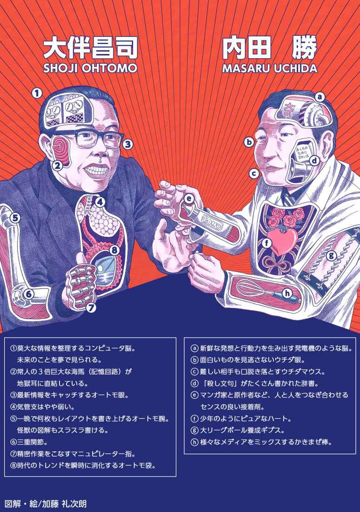

| OH 星に還った男 (ソニー・デジタル) | |
| 池田晴海 & 内田勝 | |
| (2018) | |

目次
映画企画ロング・プロット
ＯＨ
星に還った男（仮）
２００６．11 ．６．
池田 晴海
○現代の渋谷。スクランブル交差点。
若いカップル達が闊歩する。すれ違うビジネスマンやコギャル達が携帯電話で何かを話したりメールを打っている。ビルの壁の巨大なスクリーンには最新モードが映し出され、石段に座ったビジネスマンはノートパソコンを開いて何かを打ち込み、ゲームセンターでは若者達が最新のゲームに熱中している。視線の先、街路樹の道を歩く初老の女性と小さな男の子の後ろ姿が見えてくる。その後ろ姿がゆっくりと振り返ろうとした時...。
○大伴の仕事場。
「はっ」と目が覚める。空は明るい。
つけっぱなしのテレビには音声が消された状態で流行のＣＭ映像が流されている。
壁に映し出された８mm 映像は砂嵐。レコードの針はツツッツツッと終わったままノイズを繰り返している。
机の上にはおびただしいコーラの空瓶と飲みかけの瓶が置かれ、描きかけのレイアウト原稿が数枚広げられている。
壁に掛けられた無数の時計と書棚にぶら下がる無数の懐中電灯。
いつの間に眠ってしまったのか...机から体を起こす男、彼の名前は大伴昌司（33 ）。
一瞬、先程の見たこともないような街の光景が過ぎる。不思議な夢だった。
ふと見ると頬に何か紙切れが貼り付いている。気づいた大伴が紙切れを剥がすと奥村チヨの頭の部分。にやりと笑った大伴は原稿の下から色々なポーズの女性の写真を取り出し、水着姿の女性の頭をハサミで切って先程の奥村チヨの頭を貼り合わせる。つまりアイコラだ。
満足そうに奥村チヨのアイコラ水着写真を広げて眺める大伴。
※と、突然、写真の奥村チヨの口が動き、大伴に語りかけてくる。
チヨ「いつまで眺めてるのよ、スケベ。もう出かける時間でしょ」
『ボーン』と音を立てて鳴る壁時計。
大伴「お、こんな時間か」
大伴はランニングの上に黒いシャツを羽織り、大きな鞄に机のレイアウト原稿を詰め込む。
○昭和４４年の街並み。
先程の渋谷の光景とは対照的な昭和の街並み。
レトロなビルや建物、レトロな車、レトロなファションに身を包んだ人々。
ところがどうだろう。現代の渋谷の街を闊歩していた人々の表情とは対照的に人々の表情は皆、生き生きとしている。
○講談社・マガジン編集部。
雑然とした事務所内。鳴り響く電話。怒声も飛ぶ。『祝○○万部突破！』と書かれた紙が壁に貼られている。その光景を珍しそうにキョロキョロ見回す新人らしき男。
内田「おい、みんな。ちょっと聞いてくれ」
編集長の内田勝（34 ）は新人の田中耕平（23 ）を編集者達に紹介する。
挨拶を交わす図解班の編集、武井（28 ）、関（28 ）、渡辺（29 ）、小田（32 ）、 矢野（33 ）。
続いて、佐藤（33 ）を始めとする漫画班の編集者達を紹介する内田。
内田「田中君には図解班を担当してもらおうと思う」
そこへ現れる大伴。
大伴「内田さん、ラフ・コンテ出来たよ」
内田「ああ、大伴さん」
大伴「武ちゃん、これ、みんなに配って」
武井「はいッ」
大伴「関ちゃん、この間のイラスト、上がってきた？」
関 「ま、まだです」
大伴「絵描きの工藤先生、締め切り破りの常習犯だから、釘刺しといて」
関 「はいッ」
大伴「矢野君、レイアウトは？」
矢野「もう少しで上がります」
内田「ちょっといいかな、大伴さん。うちの新人なんだ」
田中「あの、この度、マガジンに配属になりました、田中耕平と申します。宜しくお願いします」
大伴「ああ、大伴昌司です。どうぞ宜しく」
佐藤「編集長、ちょっといいですか？」
内田「ああ」
佐藤に呼ばれて漫画班に移動する内田。他、編集部員もそれぞれの席にバラける。
初対面の大伴と並び、気まずい田中。
田中「あの、暑いですね」
大伴「そう？」
田中「あ、僕、北海道出身なんです。大伴さんはどちらのご出身なんですか？」
大伴「（不機嫌そうに）そんなこと君には関係ないだろう」
田中「え、え？」
内田が戻ってくる。
内田「お待たせしました。大伴さん」
大伴と内田は応接スペースに座り原稿の打ち合わせに入ってしまう。
途方に暮れる田中の周囲に集まる編集部員たち。
武井「バカ、お前、聞いちゃったのかよ」
関 「年齢とか出身地とか聞くと不機嫌になっちゃうんだ、あの人」
田中「そんな、言って下さいよ！...あの人、ウチの編集部の偉い人なんですか？」
思わず吹き出す編集部の面々。
矢野「あの人は大伴昌司。謎の人物。どこからともなくやって来て、気づいたら社員でもないのに、まるで影の副編集長の扱いだ」
不思議そうに大伴の方を見る田中。
一方、大伴と内田。大伴は新しい紙に紫の色鉛筆でコンピュータの絵を描いてみせる。
大伴「内田さん、次の巻頭グラビアはこれで行こうと思うんだ」
内田「これは？」
大伴「うん。コンピュータ。これからの社会は情報化社会だ」
にんまり笑う大伴。
内田「どうです、これからメシでも食いませんか？」
大伴「この後、アパートの住人の面接がありましてね」
○路上
電気屋の店頭にテレビが置かれている。安保反対等の学生運動の映像が流されている。
○書店。
店頭に並ぶ少年マガジンや少年サンデー等の週刊誌。
やって来た大伴はそれらに目を走らせ、特集の見出し等をチェックしている。
すると隣で「クスリ」と笑いを漏らす女性の声。
見ると若い女性が少年マガジンを立ち読みして笑い声を漏らしている。
大伴の視線に気づいた女性は咳払いし、マガジンを戻して去っていく。
女性が去った後にマガジンを手に取る大伴。
巻頭グラビアの表紙に『企画・構成：大伴昌司』の名前。
満足そうに表紙を閉じる大伴。
○講談社・マガジン編集部。
大伴が帰った後、田中は内田に尋ねる。
田中「大伴さんって、どういう方なんですか？」
内田「うーん...」
しばし考え込んでから内田は大伴との初仕事を振り返る。
○回想・喫茶店。
テーブルに向かい合う大伴と内田。
大伴「実は円谷プロがね『ウルトラＱ』っていうＳＦのテレビシリーズを作ったんですけど、ＴＢＳでオクラ入りになってるんです。でも非常に良く出来たドラマで、このままにしておくにはもったいないんですよ」
内田「ＳＦですか...それ、一度見せてもらえませんか」
○回想・円谷プロ・試写室。
円谷一（34 ）が合図を送りフィルムが回される。傍らには金城哲夫（27 ）の姿もある。
スクリーンの中で大暴れする怪獣達。人間と共存する可愛らしい怪獣もいる。
内田「これは面白い。面白いですよ大伴さん」
顔を見合わせる大伴と円谷プロの社員達。
大伴「内田さん。これ、マガジンに載せてもらえませんか。絶対に子供達にはウケますよ」
内田「......（映像の世界に引き込まれている）」
○回想・書店。
店頭に並ぶ少年マガジンの表紙は怪獣。周りの少年誌の表紙と比べて明らかに目立っている。
次々と少年マガジンを手に取っていく子供たち。
誌面には『ウルトラＱ』の特集を組んだグラビア。怪獣の図解が誌面を飾る。
○戻り・マガジン編集部。
内田「それが予想以上に売れてね。それを見たＴＢＳは慌ててＯＡに踏み切ったんだ。『ウルトラＱ』は高視聴率を記録してウルトラマンへと続いた。怪獣ブームの到来ってヤツだな」
田中「ウルトラマン、見てましたよ僕。それにマガジンの怪獣図解も！」
内田「怪獣ブームに追われるように、大伴さんは怪獣の図解や解剖図を次々に描いて来てね。それは、どれもこれも大反響だった。そのうち、僕は大伴さんともっと別の仕事をしてみたくなったんだ」
壁の時計の針がすごい速さで逆回転し始める。
時間は再び過去へと飛んでゆく。
○（過去）テレビ映像。
浩宮がデパートで怪獣図鑑を買っている映像。
○（過去）マガジン編集部・会議室。
怪獣の解剖図のレイアウト原稿をテーブルに広げ、キャプションを書き加えている大伴。
大伴「ペスターつめ...石油タンクに穴を開けるほど硬くて強い...っと」
やって来る内田。
内田「大伴さん、今回の怪獣特集も大反響だよ。売り上げも好調だ。大伴さんが怪獣図解を仕切ってくれてるおかげで僕は漫画の企画に集中出来る。今度はボクシング物だ。『あしたのジョー』。『巨人の星』に続いて大ヒット間違いなしだ」
内田、テーブルの上に『あしたのジョー』の原稿を置く。
大伴、それを覗き込む。
大伴「原作はやっぱり梶原一騎？」
内田「そう。冴えてるよ、あの人。何かに取り憑かれたように書いてる」
大伴「連載開始が楽しみだね」
内田「でね、連載漫画の企画が落ち着いたところで、折り入って相談があるんだ」
大伴「何です、改まって」
内田「僕は以前から漫画はテレビの印刷媒体だと思ってやって来た。今までの活字だらけの出版物とは違う、テレビのように人物が誌面で動き出す、叫ぶ、暴れる、そういう躍動感のある少年誌を作りたいんです」
大伴「大賛成ですよ。だから僕もこうして今までのゼロ戦や戦艦物じゃない、新しい怪獣の図解にチャレンジしてるんです」
内田「うん。そこでね、もう一歩進めて、マガジンの巻頭グラビアでもっと面白いことが出来ないかなと思ってさ」
大伴「...内田さん。僕にマガジンの巻頭グラビアを預けてくれないかな」
内田「え？」
大伴「やりたいことがあるんだ。例えば、テレビの情報番組、あれをマガジンの巻頭グラビアで出来ないかな。森羅万象、世の中のありとあらゆるテーマを図解特集してしまうんだ。漫画はフィクションだけど、子供たちにはノンフィクションの情報だって必要だと思う。だからマガジン誌上で伝えて行きたい。ダメかな？」
内田「ダメじゃないですよ。すごくいい！」
大伴「フィクションとかノンフィクションとか取り混ぜて、とにかく自分が面白いと思う物を子供達にも伝えたいんだ」
内田「やりましょう。今までの日本になかった新しい総合ビジュアル誌を作りましょう。僕等で週刊誌の歴史を変えるんですよ」
大伴「（笑顔で応える）」
○積み上げられるマガジンの巻頭グラビア見開き。
『恐竜１００種類大図鑑』、『スパイ超兵器写真大図鑑』、『２０世紀の大怪物・飛行船大冒険』、『大特撮』、『死後の世界』、『世界大終末』などなど。
○（過去）都内某ホテルの一室。
ソファに腰かけている大伴、小松左京（38 ）、平井和正（31 ）、星新一（43 ）。
大伴「今日は、ＳＦ作家の皆さんと一緒に２１世紀の大冒険をテーマにして、未来世界の探検に出発することにしましょう」
※座談会とともに『２１世紀大冒険』のグラビアページが立体的にＣＧ展開される。
ジェット推進装置で空を飛ぶ少年、丸太宇宙船に跨り宇宙遊泳する飛行士、車より早く走るサイボーグ・スポーツマンなどなど。
○壁の時計の針がすごい速さで回り始める。
時間は現在へと戻る。
○戻り・マガジン編集部。
内田「僕も結局、彼が何者なのかわからないままなんだ。初めにもらった名刺にはＳＦ作家クラブ事務局長と書かれてた。でも、彼は小説家じゃないし評論家でもない。放送作家をしたり色々な雑誌にコラムを掲載したり、今度はマガジンで図解物を構成してくれたりね。かと思うと株で儲けたお金でアパートの経営なんかもしている」
田中「何か...スーパーマンみたいな人ですね」
内田「はは、スーパーマンか」
○池月荘。
大伴が入居者の面接をしている。一組目は親子。斉藤文子（31 ）と息子の斉藤隆志（９）。
大伴「羽田空港で地上勤務ですか。でも夜の勤務の時に息子さんはどうされるんですか？」
文子「家政婦さんにお願いします。うちは主人を亡くしてずっと二人でしたから。この子も理解してくれています」
大伴「わかりました。いいでしょう。後日、契約書を作成します」
会釈する文子。
大伴、廊下に出て隣の部屋の前に立つ次の入居希望者の女性に会釈する。
大伴を見て「あ！」と声を上げる女性。
× × ×（インサート・書店）
大伴の隣でマガジンを立ち読みして笑い声を漏らす女性。
× × ×（戻り・池月荘）
女性の名前は高島響子（26 ）。響子を空き部屋に通す大伴。
響子「あの、高島響子と申します。日本航空で国内線スチュワーデスをしておりまして...」
大伴「どうも。大家の大伴昌司です」
響子「先程は失礼致しました。あの、弟の影響でマガジンが大好きなんです...でも、買うのって何か恥ずかしくて、それで立ち読みを...あ、いつも立ち読みしてるわけじゃないんです。巻頭グラビアが面白そうな時につい...あ、マガジンの巻頭グラビアってご存知ですか？少年誌とは思えないくらい内容が高度で、でもすごくわかりやすく書いてあるんです。大人でも十分に楽しめるんですよ」
大伴「...（それには答えず）今、お隣の部屋が決まったので、空き室はここだけになります。ここは誰かの紹介ですか？」
響子「はい、日航の先輩に。航空会社勤務の女性しか入居させない変わったアパートがあるって聞いて。あの、何か理由があるんですか？」
× × ×（インサート・大伴の脳内）
※リカちゃんハウスのようなアパートに生きたスチュワーデスのフィギュアが並ぶＣＧ。
× × ×（戻り・池月荘）
大伴「...女性は部屋を綺麗に使う。それに航空会社は高収入で安定した職業だから家賃の滞納の心配はない。それだけです」
響子「はあ...大家さんて変わった方ですね」
大伴「......（君には言われたくないと思っているが言わない）」
響子、部屋をキョロキョロと見回す。
響子「お部屋、気に入りました」
大伴、響子の身上書をペラペラとめくる。
大伴「いいでしょう。後日、契約書を作成します」
響子「（笑顔で）宜しくお願いします」
○どこかの料亭。
ＳＦ作家クラブの座談会。大伴の他に小松、星、平井、福島正実（40 ）等が揃っている。
小松「昭和４０年代前半の儲け頭を暴くか」
福島「いいですね」
星 「大伴さんでしょう。怪獣成金になった｣
小松「怪獣のぬいぐるみ、裏を返すとどれもこれも大伴と焼印が押してあるんじゃないか？」
平井「怪獣ブームはすごかった。彼は怪獣博士ですからね」
大伴「怪獣ブーム？そんなものありましたっけ？」
福島「小説家でもない、評論家でもない、怪獣博士でもないとなったら、あんたはいったい何家なんだ？」
大伴「さあ、何家でしょう？（笑う）」
小松「トモさん、あんた小説を書け。何なら書き方教えてやろうか？」
笑う小松。大伴も笑っている。
○大伴の仕事場。
テレビにはＣＭ映像、８mm には映画、レコードからは流行歌が流れている。
コーラを飲み干し、原稿用紙に向かう大伴。『夏の黄昏』とタイトルが書かれた原稿用紙。
しかし文章はほとんど書かれていない。クシャクシャと原稿を丸める大伴。
新しい原稿用紙に怪獣の図解を描き始める。
そこに鳴るインターフォン。ドアを開けると響子が立っている。
○池月荘。
二階の響子の部屋の鍵を差し込み回す大伴。隣で覗き込むように見ている響子。
鍵は何かに引っかかったように開かない。
響子「ね、大家さん、開かないでしょ？壊れてるみたい」
大伴「わかりました。鍵は明日、修理させます。...とりあえず、今日は私の仕事場の二階で休んで下さい。私は別の場所に泊まりますから」
響子「こんな時間に泊まれる場所なんてあるんですか？」
大伴「ええ、まあ...」
○大伴の仕事場。
響子「おじゃまします」
大伴に促されて部屋に上がる響子。異様な部屋の様子に驚く。
響子「すごい。懐中電灯がいっぱい...缶詰も。どうしてこんなに？」
× × ×（インサート・大伴の脳内）
※壊滅的な大地震のＣＧ。
シェルターのような大伴の仕事場は無事だが停電になる。
缶詰片手に懐中電灯で辺りを照らす大伴。
× × ×（戻り・大伴の仕事場）
大伴「別に...深い意味は...」
響子「大家さんて何のお仕事されてるんですか？」
大伴「何だっていいじゃないですか。とにかく、一階にあるものには触らないで...（下さい）」
と大伴が言いかけたその時、「あっ！」と響子が書棚の怪獣図鑑に飛びつく。
響子「大家さんも怪獣好きなんですか？私も弟の影響でこういうの大好きなんです」
怪獣図鑑をパラパラめくる響子、『解説・構成：大伴昌司』の文字を見て手が止まる。
響子「え、え？これ、大家さん？」
大伴「違います」
図鑑を取り上げる大伴。
響子「え、でも、大家さんの名前ですよね」
大伴「同姓同名でしょう」
響子は机の上の原稿用紙に怪獣の図解が描かれているのを目ざとく見つけ指を差す。
大伴「......」
○翌日の池月荘。
響子の部屋の鍵は無事に直り、響子はお礼に羊羹をもって大伴の仕事場を訪れる。
○大伴の仕事場。
大伴は何とも困った表情をするが、物怖じしない性格の響子は半ば強引に上がり込む。
響子「どうぞ、召し上がって下さい」
差し出された羊羹を受け取り、口にする大伴だが、だんだんその顔は青ざめてブルブルと震えだす。異変に気づく響子。
響子「どうしました？」
大伴「実は...小豆は苦手で...昔、あたったことがありまして」
響子「そんな、じゃあ、無理して食べないで下さい」
慌てて取り上げる響子。大伴はコーラをがぶ飲みする。
大伴の何とも言えない不器用さに思わず吹き出す響子。
響子「少し待ってて下さい」
○池月荘。
響子は自分の部屋から果物を持ってきて、階段に座っていた隆志に声をかけ、再び大伴の仕事場に上がりこむ。
○大伴の仕事場。
響子「お口直しにどうぞ」
大伴に果物を差し出す響子。招き入れた隆志には羊羹を差し出す。
隆志、真っ先に戸棚に飾られた怪獣の人形に関心を示す。
響子「ねえ、これ、大家さんが描いたんだって」
怪獣図鑑を広げて隆志に見せる響子。
大伴「描いてませんよ。僕がやったのは構成と解説で、そういう絵は絵描きが描くんです」
生真面目に解説する大伴。
※隆志は怪獣図鑑に見入る。まるですぐそこに怪獣がいるかのように画面にリアルな映像。
『アーストロン：Ｘ線アイ→岩の中でＸ線を放ち１万メートル先の敵を透視する。マグマ口→地底でマグマを吸ってスプレーのように吐き出す』、『ペギラ：ペギラつめ→ジャンボジェットをひっかき落とす。ペギラつばさ→水素がつまってるので空に浮く』、『バルタン星人：テレパシー脳→分身術・転移術を使う。冷凍液ぶくろ→赤い冷凍光線を放ち、すべてをかためる。スペルゲル反射ひふ→スペシウム光線をはねつける抗体でできている』などなど。（ＣＧ映像が展開される）
どこからか怪獣の咆哮が響いてくる。
隆志「これ、おじさんが描いたの？」
大伴「だから描いたのは俺じゃなくて...って、俺はおじさんじゃない。大伴昌司という名前があるんだ！」
隆志「じゃあ...大伴が作ったの？」
大伴「呼びすてにするな！」
二人のやり取りに吹き出す響子。
○マガジン編集部・会議室。
ぐったりしている大伴。すれ違いざまに声を掛ける内田。
内田「疲れてるみたいじゃないか、大伴さん」
大伴「アパートに変な住人を住まわせてしまったみたいでね」
内田が去った後、緊張ぎみの田中がコーヒーを持って来る。
田中「失礼します。あの、お茶をお持ちしました」
大伴「僕は客人じゃない。こういうマネはしなくていい」
田中「す、すいません」
まだ立ち続ける田中。
大伴「まだ何か？」
田中「あの、僕、マガジンの巻頭グラビアのファンで、ずっと読んでました。これからはこういうビジュアルの時代だと思うんです。学生の頃、仲間内では、手にはジャーナル、心にマガジンなんて言ってて...あの、一緒に仕事が出来るなんて感激です！」
一気に捲くし立てる田中。
大伴は何とも居心地悪そうに頭を掻く。
大伴「そういうセリフは内田さんに言ってくれ。あの人が今日のマガジンを作ったんだ」
照れ臭そうにそっぽを向く大伴。
田中「......」
そこにレイアウト原稿を持って矢野が現れる。
矢野「大伴さん、レイアウト上がりました」
大伴「ああ」
レイアウト原稿に目を通す大伴。
大伴「これ、ラフ・コンテと写真のサイズが合ってない気がするけど」
矢野「ああ、はい。大伴さんのコンテが断ち割りからはみ出していたので、枠内に収めるために少し小さくしてみました」
大伴「いいんだよ、はみ出してる所はカットして。ラフ・コンテに合わせてサイズ直して」
矢野「え？」
大伴「書き直しだよ」
矢野「今からですか？」
大伴「印刷所の締め切りまで１時間ある。やり直してくれ」
矢野「でも、言われなきゃわからないくらいの違いですよ。これぐらいだったら...」
大伴「やり直しだ」
矢野「...わかりました」
田中「......（オロオロとして）」
矢野について「失礼します」と出て行く田中。
○マガジン編集部。
田中「何か、編集って厳しい世界なんですね」
矢野「あの人は特別だ」
田中「え？」
矢野「お前にもそのうちわかるよ」
田中「......」
○マガジン編集部・会議室。
原稿用紙に大きく『情報社会』と書き込む大伴。
トントンと鉛筆を机で鳴らして考え込む。
※突然、周囲が暗くなり、ちぎれた布片が大伴を中心に渦を巻く。
布片にはそれぞれコンピュータの映像やＦＡＸの映像、カーナビの映像や諸々の映像が映っている。
突然、布片は掻き消え、周囲が明るくなる。
大伴は何か閃いたように持っていた鉛筆で図解を描き始める。
○書店に並ぶ少年マガジン。
表紙に今週のグラビア『情報社会』の文字が躍る。
○池月荘の前。
夜、仕事場に帰ってきた大伴の目に池月荘の階段に座っている隆志の姿が飛び込んでくる。
大伴「こんな時間に何やってんだ。お母さんはまだか？家政婦さんがいるんだろう？」
頷く隆志。
隆志「家政婦さんといても面白くないから...大伴、この間の図鑑見せて」
大伴「大伴さんだ。俺は忙しいんだ。子供と遊んでる暇はない」
そのまま行こうとする大伴。隆志はまた階段に腰掛ける。
行きかけて振り返る大伴。
大伴「...少しだけだぞ。仕事の邪魔はするなよ」
隆志「うんッ」
大伴「ちゃんと家政婦さんに言ってこい」
頷いて階段を上っていく隆志。大伴が仕事場に入っていくのを見届ける。
瞬間、激しく咳き込む隆志。ゼイゼイと雑音混じりの呼吸音。
隆志、ポケットから喘息の吸入薬を出し数回吸入する。
呼吸が落ち着くと、そのまま自分の部屋には行かず大伴の仕事場に向かう隆志。
○大伴の仕事場。
隆志がやって来る。いつものようにテレビをつける大伴。
大伴「お前も飲むか？」
隆志にコーラを勧める大伴。
隆志「それ飲むと骨が溶けるって聞いたよ」
大伴「バカ言うな、それが本当なら俺は今頃、骨なし軟体怪獣に変身してるよ」
コーラを受け取って恐る恐る口をつける隆志、美味しそうに飲み始める。
それを見て満足そうに大伴もコーラに口をつける。
大伴「お前、これ読んだことあるか」
今週号のマガジンを見せる大伴。
隆志「マンガ読むと頭がバカになるって...お母さんが」
大伴「お前のお母さんはダメばかり言うんだな。まあ読んでみろ。それでバカになったら一万円払ってやるよ」
※マガジンを受け取りページを開く隆志。目の前に大伴のグラビア『情報社会』が広がる。
機械の裁判システム、犯罪情報センター、コンピュータによる学習装置、車の自動運転システム、他。リアルに想像する隆志（立体的なＣＧで展開）。
隆志「すごい、すごい、これ、大伴が考えたの？未来は本当にこんなふうになるの？」
目を輝かせる隆志。
大伴「それだけじゃないぞ」
大伴は紫の色鉛筆で原稿用紙にパソコンや携帯電話らしき絵を書き始める。
大伴「未来の人間は一人一台、コンピュータや電話を持つようになるんだ」
隆志「どうしてわかるの？」
大伴「俺は未来を夢で見ることが出来る」
隆志「嘘だぁ」
大伴「嘘なもんか。俺はこう見えて人間の皮を被った宇宙人かもしれないぞ。あそこの秘密扉は宇宙船に繋がってるかもしれない」
隆志、ゴクリと息を呑んで扉を開けようとするが鍵がかかっている。
大伴「ははは、秘密扉なんだから簡単に開くわけないだろ」
隆志「......」
○小学館編集部。
大伴を迎える編集者の片山（32 ）、奥寺（30 ）、山本（28 ）。大伴の怪獣図解のラフ原稿を広げる。
山本「は～、すごいですね。これ本当に全部、大伴さんが？」
片山「ウチは円谷プロとは前から親交がありましてね、先日、一さんからウルトラマンの図解をやって欲しいと言われた時にはどうしようかと思ったけど、ウチの奥寺が怪獣の図解なら大伴さんだろうって。いや、実際、助かりましたよ」
奥寺「でも、大伴さん、いつ連絡しても仕事場にいないんですよ。で、結局、マガジン編集部でつかまるわけ。ウチのライバル社ですよ。連絡しづらいんだよな」
大伴「（笑っている）」
山本「大伴さん、ご自宅はどちらなんですか。ご出身がこちらなら念のためご実家の連絡先も教えて頂けると助かるんですけど」
奥寺「わ、バカッ」
山本の口を押さえる奥寺。
大伴「...天涯孤独の身なんでね、実家はないんです。自宅という家もない。その日暮らしの根無し草なんだ。今まで通り仕事場にいなければマガジンに連絡して下さい」
片山・奥寺「......（呆気にとられ）」
大伴「じゃあ、レイアウト上がったところでまた伺います」
去って行く大伴。「どうも、お疲れさまです」と片山、奥寺。
山本「何なんですか、いきなり口押さえて！」
奥寺「いや、前に実家や自宅の話を聞いたら、いきなり不機嫌になってさ。あの人にプライベートの話を聞くのはタブーだって後から先輩に聞いて...」
片山「俺も聞いた。出身校とか家族の事とか絶対聞くなって」
一同「......」
○大伴の仕事場。
ラフ・コンテを描いている大伴。原稿待ちの田中。
田中「大伴さんのお父さんって、何されてる方なんですか？」
ふいに立ち上がる大伴。
咄嗟にぶたれると思い身構える田中。
大伴、冷蔵庫からコーラーを２つ出して１つを田中に渡す。
大伴「ほら」
田中「あ、ありがとうございます！」
大伴「出身地とか家族とか...そんなことを聞いてどうする」
田中「え...どうって、大伴さんのこともっと知りたいなぁなんて...」
大伴「君の父親は何をしているんだ？」
田中「あ、田舎で教師やってます。数学の」
大伴「じゃあ聞くが、君は教師の息子として評価されるのと、君自身を見て評価されるのとどちらが嬉しい？」
田中「そりゃ、俺自身を見て評価されたいですよ」
大伴「なら、そういうことだ。俺の答えもわかるだろ」
田中「はあ...」
大伴「もう少しで上がるから、それまで適当にテレビでもつけて見ててくれ」
田中「はい」
テレビの電源を入れる田中。映像はアポロ１１号の月面着陸。
田中「これ、感動したなぁ。どこの局も連日これですね」
大伴「人類の偉大なる一歩だからな。これからは宇宙開発もどんどん進んで、そのうち現実に火星に住める日が来るかもしれない」
大伴、手は休めずにテレビと田中の言葉に耳を傾けている。
田中「じゃあ、宇宙旅行も夢じゃなくなるんですかね」
大伴「たぶんな」
田中「何か人類が未来へ向かってるって感じがしてワクワクすんなぁ」
大伴「マガジンでもアポロの特集を組むか」
田中「いいっスね」
テレビの映像はコマーシャルに変わる。
大橋巨泉が万年筆を片手にした映像。
巨泉「みじかびの、きゃぷりてとれば、すぎちょびれ、すぎかきすらの、はっぱふみふみ」
田中「あ、これ。大伴さん、これって何語ですかね」
大伴「短いキャップをとればすぐにすらすら手紙が書けるってなことを適当に言ってるんだろ」
田中「えっ、そうなんですか？」
大伴「コマーシャルってのは、どれだけ相手の関心を引けるかが勝負なんだ。わかるようなわからないような意味不明な言葉を並べて相手を引きつける作戦なんだろう」
田中「大伴さんって...やっぱすごいな」
大伴「ほら、ラフ・コンテ上がったぞ。すぐに編集部に届けてくれ」
田中「はいッ」
原稿を持って「失礼します」と出て行く田中。
残った大伴は新聞の切り抜きの整理を始める。
『奇人・超人』、『超常現象』、『ＳＦ関連』などと書かれた封筒に振り分けて行く。
※と、封筒から無数の切り抜きの新聞記事が飛び出し、吹雪のように吹き荒れる。
× × ×（インサート・大伴の脳内）
※円筒状の壁に無数のテレビ画面が組み込まれた空間（ＣＧ映像）。
画面には世界中のニュースやドキュメントや野生動物の映像などが映っている。
その中心で空に浮かんでいる大伴。
ゆっくりと何かをすくうように手を前に差し出す。
映像が吹雪となって大伴の手の中に吸い込まれて行く。
× × ×（戻り・大伴の仕事場）
何か閃いたように原稿用紙に素早く図解を描き始める大伴。
○マガジン編集部。
大伴「なんだ、このイラストは！」
怒鳴る大伴。一斉に振り返り見る田中と編集者達。
小田が大伴に怒鳴られている。
大伴「僕はこの構図で指示したはずだ。何でこんな構図で出来上がってくるんだ」
小田「ちゃんと指示は出しました。でも実際に絵にするのは絵描きさんですし、彼らには彼らの作家意識と誇りがあります。作家さんの判断でこちらの方が良いだろということになったんです。構図だってこっちの方がずっと良くなってるはずです」
大伴「あんたや三流絵描きの意見なんか聞いていない。僕はこの構図でやれと言ったんだ。やり直してくれ」
ゲラを突き返す大伴。
小田「無理です。もう間に合いません。編集長もこれでＯＫ出してるんですよ」
大伴「本当ですか、内田さん？」
内田「大伴さん、すいません。大伴さんのコンテが完璧なのはわかってるんです。でも作家さんの意見というのも時には聞いてあげないと...」
大伴「わかりました。やめましょう。もうグラビアの仕事はこれきりにして下さい。こんなやり方であなた達と仕事なんかやってられない」
内田「待って下さい。大伴さん！」
そのまま出て行こうとする大伴を必死に宥めながら後を追う内田。
呆気に取られている田中。
矢野「気にするな小田、あの人のやり方は尋常じゃない」
小田「......」
矢野「怪獣博士だか何だか知らないけど、円谷プロにだって嫌われてるんだ、あの人は」
田中「え、どうしてですか？」
矢野「大伴さんは怪獣を企画したりデザインしてるわけじゃない。出来上がった怪獣を見て勝手に設定を書き加えて世に出してるんだ。特殊美術の人間は怪獣とビルの対比を考えて作ってるのに、大伴さんは勝手に怪獣の体長は１００ｍなんて書いちゃうだろ。だから映像の対比が合わなくなるって円谷プロは困り果ててるらしい」
田中「......」
大伴の去った方を見つめる田中。
一方、漫画班。
図解班の光景を冷ややかに眺めている。
編集Ａ「相変わらず揉めてますね、図解班」
編集Ｂ「社員でもない男に何で頭が上がらないんだ、あいつら」
編集Ａ「巻頭グラビアがやり直しになる度に校了が延びて、こっちまでとばっちりですよ」
佐藤「マガジンは純粋に漫画で勝負している。余計な付録ページなんかなくても十分にやっていけるのに内田さんは何を考えてるんだか」
○路上。
ゴミ箱を蹴り飛ばす大伴。
大伴「どついもこいつも」
響子「ダメですよ物に当たっちゃ」
後ろから響子の声。振り返る大伴。
響子「今まで買うのは恥ずかしかったんですけど、大家さんのグラビアが見たくてつい買っちゃいました」
少年マガジンを見せる響子。屈託ない表情に大伴の表情も思わず緩む。
○喫茶店。
コーラを飲む大伴とコーヒーを飲んでいる響子がテーブルに向かい合う。
響子「え、マガジンの仕事やめちゃうんですか？」
大伴「編集のへの字も知らない奴らばっかりだ。アイデアを完全な形で読者に届けるためにも無能な奴に足を引っ張られたくはない。色指定も割り付けも全部俺がやらなきゃダメだ。なのにあいつらは自分の無能を棚に上げて口答えばかりする。あんな奴らとは仕事なんて出来ない」
響子「苦しくないですか、全部、自分で背負い込むのって」
面食らう大伴、コーラを飲む。
響子「大家さんは、きっと走るのがすごく速い陸上選手なんです。後から走ってる選手は大家さんに追いつこうと必死に走ってる。でも、後から走る選手がみんないなくなってしまったら大家さんが走るの速いって、きっと誰もわからないじゃないですか」
大伴「......」
響子「一緒に走る選手がいて、監督や給水係のサポートがあって、初めて大家さんは大家さんにしか出来ない走りを見せることが出来るんですよ」
大伴「あなたは変わった人だな」
響子「よく言われます。今日もね、非番でＳＦ映画が見たかったんですけど、そんな子供騙しの物って言って誰も付き合ってくれないんですよ」
大伴「子供騙しじゃない、ＳＦはこれからの時代、映画の中心になる分野ですよ！これからは映像の時代です。みんな非日常的な映像を求めるようになるんだ。あなたの周りの人間は何もわかっちゃいない」
クスリと笑う響子。
響子「大家さんなら、そう言うんじゃないかと思いました」
ＳＦ映画のチラシを見せる響子。
響子「良かったら、一緒に行って頂けませんか、大家さん」
参ったように俯く大伴。
響子「ダメですか？」
大伴「...その大家さんっていうのやめませんか。それをやめてくれたら一緒にお供しますよ」
響子「じゃあ、大伴さん。お供して下さい」
笑顔を向ける響子。大伴はコーラを一気に飲み干す。
○池月荘の前の道。
響子を送って帰ってくる大伴。アパートで文子と鉢合わせ会釈する。
大伴「随分、遅いですね。今、お帰りですか？」
文子「え、ええ...ちょっと残業がありまして」
大伴「そうだ、斉藤さん。隆志君がよく、ウチに遊びに来るでしょう。家政婦さんは気を悪くしていないですか？」
文子「え？あ...ええ、子守から解放されて家事がやりやすいみたいです。こちらこそ一度、ご挨拶に行かなければと思ってたんですけど」
大伴「いえ、彼は優秀な評論家でしてね。僕の仕事の手伝いをしてくれてるんですよ」
会釈して足早に去る文子。
響子「隆志君、遊びに行ってるんですか？」
大伴「ええ、時々ね」
響子「私も今度、遊びに行っていいですか？今度は羊羹じゃない物を持って行きますから」
吹き出す響子。
大伴「（頭を掻き）おやすみなさい」
足早に踵を返す大伴。響子は大伴の後ろ姿を微笑んで見送っている。
○大伴の仕事場の表。
池月荘から帰ってきた大伴の目の前に内田が立っている。
内田「大伴さん、少し話がしたいんだ。いいかな」
頷く大伴。
○大伴の仕事場。
コーラを飲みながら向かい合う大伴と内田。
内田「大伴さん、あなたが言うビジュアル文化が来れば、その基礎を作ったあなたの名前は必ず残る。今ここでマガジンの仕事を投げ出したら、今まで積み重ねて来た事が全て水の泡じゃないですか」
大伴「それはわかってる。マガジンの特集ページがこれからの雑誌の大きな流れになる。そう信じてるからこそ、僕だって今まで骨身を削ってやって来たんです。でもね、ビジュアル時代が来たとしても、大伴なんて名前は誰も覚えてやしませんよ」
内田「そんなことはない。必ず大伴さんの名前は残る。僕が保障しますよ」
大伴「いや、あとには風の吹くばかりです。でもね、グラビアで受けたインパクトは必ず読者の心に残る。そう信じたいんだ。だからこそ、僕は完璧な仕事をしたいんです」
内田「小田の事は謝ります。彼は彼なりに真剣に取り組んで、作家の声に耳を傾けようとした。良い仕事をしたいという思いは同じなんですよ。それに最終的には僕もＯＫを出したんです。つまりは僕の責任だ。この通りです」
頭を下げる内田の肩を持ち上げて頭を上げさせる大伴。
大伴「よして下さい。ただ完璧で純粋な仕事をしたかった、それだけなんです。怒鳴ったのはよくなかった。ちゃんと話して聞かせれば良かったんだ。内田さん、僕にはね時間がないんです。きっと４０前には死ぬ。命の短い可哀想な男のしたことだと思って、どうか許して欲しい」
内田「大伴さん、あなた、前からそんなことを言っているが、いったい何で４０前に死ぬなんて思うんだ。医者にでも言われたんですか？」
大伴「夢を...夢を見たんだ。易者に未来を占ってもらって『お前は４０才前に死ぬ』と言われた。その易者がね、自分の顔だったんだ」
真顔の大伴に思わず吹き出す内田。
内田「何だ、そんなこと。大丈夫、保障しますよ。あなたと僕は長生きする。お互いに腹が出て白髪になっても、こうやってコーラを飲んでますよ」
大伴「内田さんは僕の監督で給水係なんだな」
内田「え？」
大伴「次のマガジン、大阪万博のタイムカプセルに入れる記念すべき号ですよね。グラビアの特集、劇画入門なんてどうだろう？『一枚の絵は一万字に勝る』なんてコピーはどう？勝るは内田勝にかけてるんだけど」
内田「いいですね、それ」
二人、夜通しコーラを飲む。
○昭和４５年１月のマガジン紙面。
グラビアを飾る劇画入門。『一枚の絵は一万字に勝る』のコピー。
○マガジン編集部。
やって来る大伴。内田の姿がない。
大伴「あれ、内田さんは？」
田中「それが...」
矢野「取締役に呼ばれてます。『一枚の絵は一万字に勝る』ってコピー、あれが年配者にえらく顰蹙を買ったそうで。長年、出版に携わった人には活字に対する深い信仰心みたいなものがあるでしょう、それを真っ向から否定したと受け取られたんですよ」
そこへ戻ってくる内田。
大伴「内田さん、すまない。あのコピーで内田さんの立場を悪くしてしまった。申し訳ない」
内田「いやいや、あれは僕と大伴さんの合作なんだから、大伴さんが謝ることなんてありません。上の人間には僕から説明してきました。渋々という感じだったけど、一応、理解はして頂けましたよ。あのグラビアはすばらしい出来だと僕は思ってます」
大伴の表情に微かな笑みが戻る。
○マガジン編集部
深夜の編集部でラジオを聴きながら残業している渡辺。
別のデスクに矢野、小田、武井、関、田中。
田中「え、大伴さんて一人暮らしでしょ？」
武井「でも、昼間、大伴さんのとこに電話したらおばさんが出たぞ。『今、出かけてますよぉ』なんてさ」
関 「お手伝いさんとか下宿のおばさんじゃないの？」
田中「いや、そんな人、いませんでしたよ」
会議室からラフ・コンテを持って大伴がやって来る。
大伴「ああ、あの家はよく出るんだよ（幽霊の身振り）」
渡辺「や、やめて下さいよ、こんな夜中に！」
ラジオのボリュームを上げる渡辺。笑っている大伴。
大伴「君、これ、みんなに配って」
田中「はい」
大伴「何、ナベちゃん、深夜放送なんていつも聴くの？」
渡辺「はい、土井のアニキとか最高ですよ」
田中「俺、俺、レモンちゃんが好きです」
武井「みのもんたもいいよ」
関 「俺はカメカメだな～」
渡辺「...深夜放送の舞台裏って覗いてみたいよな」
大伴「うん。それ、まだどこもやってないな。ナベちゃん、取材の手配して」
渡辺「え、はいっ！」
大伴、編集部員を見回して。
大伴「みんなも、これから面白そうなネタがあったらどんどん出してくれ」
武井「え...いいんですか？」
関 「企画は今まで編集長と大伴さんが決めてたじゃないですか」
大伴「面白けりゃいいんだよ。慣例なんか関係ない」
武井「やります！俺達、提案しまくりますよ。なあ？」
関 「ああ！」
矢野「......」
小田「......」
渡辺も田中も高揚している。矢野と小田は意図がわからないという様子。
鳴る電話。出る田中。
田中「大伴さん、内田編集長です」
受話器を替わる大伴。
大伴「内田さん、お疲れさまです。...えッ、監督が？」
○葬儀場。
白い花に囲まれた円谷英二の遺影。
焼香する大伴。
○回想・円谷プロ試写室。
怪獣の映像に見入っている内田。
試写室に入ってくる円谷英二（64 ）。
金城「親父さん」
英二「（シーッと人差し指を鼻に当てる）」
英二に気づいた大伴が、そっと試写室の後ろへやって来て英二の横に並ぶ。
大伴「どうも、お邪魔してます」
英二「ウルトラＱのことで色々と骨を折ってくれてるってね。かたじけない」
大伴「とんでもない」
英二「しかし大伴君は顔が広いな」
大伴「いえ、何でも屋ですからね。色々な所に顔を突っ込んでるだけですよ」
英二「大伴君は何になりたいの？」
大伴「え...（言葉に詰まる）」
英二「じゃ、質問を変えよう。大伴君は何がしたい？」
大伴「...自分が面白いと思う物を人に伝えていく仕事がしたいですね。それが評論なのか小説なのか、自分でもまだよくわからないんですけど」
英二「やりたいことをやる。全身全霊でやる。それを積み重ねて行く。そうするとね、気がついた時には何者かになってるんだな、人間は。そうして僕は気がついたら映画監督になってた」
大伴「監督の特撮、好きですよ。初めて作品を見た時、日本にもこんな物が撮れる監督がいるんだって感激したんです」
英二「まだまだやりたいことがある。怪獣だけじゃなくてね、いつか飛行機の映画を撮ってみたいんだ。大伴君が面白いと感じたら、その映画をみんなに紹介してくれるかな」
大伴「もちろんです。喜んでやらせて頂きます」
英二「その頃には、君もなりたい物になれてるといいね」
大伴「......（英二の言葉を噛み締める）」
○戻り・葬儀場。
焼香を終えて出てくる大伴と内田。
大伴「弔問客が少なすぎないか。花だってもっと大きな物を用意すればいいのに。特撮の神様の葬式だっていうのに、これじゃ、あまりに寂しすぎる」
内田「大伴さん（諌めるように）」
記者「すみません。その辺のコメント、少し伺ってもいいですか？」
○円谷プロ。
スポーツ新聞の芸能欄のコメントに、著名人に並んで大伴のコメントが載っている。
『大変、寂しい葬式だった。大伴昌司』
新聞を叩きつける円谷一。
一 「あんまりだ。ウチの怪獣図解で食べて来たようなもんなのに、言うに事欠いて『寂しい葬式』だなんて。バカにするにも程がある」
○小学館。
大伴を出迎える片山、奥寺、山本。
片山「どうしたんですか。青い顔して」
大伴「...円谷プロに、出入り禁止になってしまった」
片山「ええ？」
× × ×
片山「なる程、そういういきさつですか」
大伴「片山さん、あんたは前から円谷と親交がある。上手く取り成してはもらえないだろうか」
片山「う～ん。一さんも一度、言い出したら意固地になるところがあるからな」
大伴「悪気があって言ったわけじゃないんだ。誤解なんだよ」
片山「それにしてもタイミングが悪いですよ。一さん、気負っていた時だからね。監督が作った円谷プロの借金返済するのに奔走して、これから自分が円谷を盛り立てていこうって時のことだから...少し時間を置いた方がいいかもしれない。冷却期間をおいて、折をみて僕から食事にでも誘ってみますよ」
大伴「恩にきます」
○どこかの建物の階段。
薄暗い階段を一人で上る大伴。
背後から「カツーン、カツーン」と足音が近づいてくる。
大伴、足音から逃れるように駆け上がる。足音も駆け上がってくる。
屋上。行き止まりになり振り返る大伴。
重い鉄扉が開く音がして、足音の主が闇に隠れて現れる。その顔は見えない。
大伴の額に汗が伝う。
ゆっくりと闇から『足音の主』の足元が垣間見える。
○マガジン編集部・会議室。
「はっ」と目が覚める大伴。パイプ椅子を並べて仮眠を取っていた。
大伴「......」
体を起こし、机の上のレイアウト原稿をじっと見る大伴。
レイアウト原稿の中に一部、黒塗りの小さな小さな空間がある。
大伴、立ち上がり、それを咄嗟に手で押さえる。
大伴「......」
× × ×（インサート･大伴の脳内）
※異空間の中、透明のボードにイラストやキャプションのパネルが組み込まれている。
大伴は隙間を埋めるパズルのようにイラストやキャプションのパネルを手でスライドさせて組み替えて行く。しかし何度やっても埋まらない空間がある。恐怖を覚える大伴。
× × ×（戻り・マガジン編集部・会議室）
立ったまま、机のレイアウト原稿の空間を手で押さえている大伴。覗き込む田中。
田中「何やってるんですか、大伴さん？」
大伴「君、これ、この空間、矢野君に言って何かキャプションで埋めさせて」
田中「え、こんな小さな空間にですか？」
大伴「何でもいいんだ。取材を元にしたキャプションを入れるように言ってくれ」
田中「...わかりました」
レイアウト原稿を持って出て行く田中。
大伴「......」
○路上。
ショーウィンドーのガラスに手を翳す大伴。
手の中には最新のファッションに身を包んだマネキンがぎっしりと立っている。
○大伴の仕事場。
数日後。机で仕事をしている大伴。怪獣図鑑を見ている響子と隆志。
楽しそうに怪獣の解剖図を見ている響子の姿をコーラを飲みながら眺める大伴。
大伴「あなたは珍しい人だな。普通、若い女性が興味を持つのは洋服だったり、化粧品だったりするでしょう」
響子「そうね、そうかも。だって私が今、一番興味を持っているのは大伴さんだし」
思わず飲んでたコーラを噴出す大伴。
響子「ああ、何やってるんですか」
ハンカチで大伴の服を拭いてやる響子。その様子を本の隙間から上目遣いで見ている隆志。
大伴、咳払いをする。
大伴「しばらく泊り込みの仕事でここには帰って来られないかもしれません」
響子「どちらか行かれるんですか？」
大伴「赤坂のホテルでＳＦシンポジウムというのを開くんです。ＳＦ作家を集めてＳＦ議論をするイベントなんですが、私はＳＦ作家クラブの事務局長をやってましてね、会を取り仕切らなければならない」
響子「すごい、大伴さん、そんなこともされてるんですか？」
大伴「ただの何でも屋ですよ。ＳＦ作家クラブで行く旅行や忘年会の幹事をやったり、そうそう、作家の星さんがね、長編の執筆を頼まれた時に『僕は短編しか書いた事がないから長編が書けるように催眠術師に暗示をかけて欲しい』なんて言い出して、僕が催眠術師を探したんだ」
響子「あの作家の星新一さん？すごい、催眠術なんて小説みたい！やっぱり、大伴さんて面白いわ」
頭を掻く大伴。
たまに咳き込む隆志。
大伴「風邪でもひいたか？」
隆志「ううん、唾が変なとこに入っただけ」
鳴るインターフォン。出ると内田が立っている。
大伴「すいませんが、これから打ち合わせがあるんです」
響子「あ、すいません。ほら、隆志くん」
「お邪魔しました」と出て行く響子と隆志。内田に会釈して去る。
内田「...大伴さん、今のは？」
大伴「アパートの店子です。たいした用じゃありません」
大伴、それ以上はつっこむなという空気。
内田「（肩をすくめる）」
テレビには音を消したＣＭ映像。壁には８mm 映画、流行のレコードがかけられる。
ラフ・コンテを書きながら内田に相対する大伴。
内田「で、大阪万博の企画についてなんですがね」
大伴「そこらのガイドブックみたいなグラビアじゃつまらない。例えばメイキングとか舞台裏とか図解解説しながら各パビリオンの見所を説明したらどうかな。写真なんかも他が撮らないようなアングルをいっぱい撮って」
内田「舞台裏か...面白そうですね」
大伴「大阪万博はすごいですよ。まるで近未来都市の縮図です。出来れば図解班のメンバー全員、一度は行かせて上げて下さい。いや、少なくとも二回は行かせてあげて欲しい」
手を休めることなく続ける大伴。
内田「ここに来るたびに思うけど、あなたは聖徳太子の生まれ変わりなんじゃないかな」
大伴「何、急に言い出すんですか（笑って）」
大伴、冷蔵庫に向かいつつ、「コーラでいいですか？」と尋ねる。
内田「ええ、頂きます」
○池月荘。
自分の部屋に帰った響子の元に電話がかかってくる。
響子「はい、高島...お母さん？うん、うん、元気よ。大丈夫、ちゃんと食べてるから。うん。届いてる...お米にお野菜に漬物に...」
部屋の片隅のダンボールから覗く見合い写真らしき封筒。
響子「それと、何、あれ。お見合いなんかしないって言ってるじゃない。もう、ああいうの入れないでくれる？そういう相手は自分で見つけるから。はい、はい、じゃあね」
ダンボールを見つめて溜息をつく響子。
○赤坂ニュージャパン・ホテル・会議室。
大伴、小松、平井、星、他数名の作家達。
大伴「ちょっと待って下さい。海外からも作家を呼ぶんですか？」
小松「ああ、アメリカ、ソ連、イギリス、カナダ、一通り著名な作家には声を掛けておいたよ」
星 「いいですね。万博と絡めて大々的にＳＦを認知させるチャンスだ」
小松「そうだ、万博も見学してもらおう」
作家Ａ「ＳＦシンポジウムを記念して浴衣や団扇を作ったらどうかな。海外の客は喜ぶんじゃないですか」
作家Ｂ「ああ、それはいい」
大伴「冗談じゃない。海外から作家を集めれば渡航費用や宿泊代が発生するんですよ。正式な招待状だって用意しなけりゃ格好がつかない」
小松「だって、もう声掛けちゃったよ」
大伴「金はどこから集めるんです？会場の手配は？プログラムや段取りはどうするんですか」
一同「......（顔を見合わせ）」
平井「実務的な手配はトモさんにお願い出来ないかな。僕等はアイデアは出せるけれど、こういう段取りはどこから手をつけていいかわからない」
大伴「......（呆れて）」
○飛騨高山。
『からくり人形』の取材を行う大伴と矢野、田中とカメラマン。
カメラマンに色々なアングルで写真を撮るよう指示を出す大伴。
職人から聞いた話をメモしている大伴。
× × ×
公衆電話で電話をかけている大伴。
大伴「何やってるんだ！ステ看は警察の許可がいるんだぞ。勝手にそんなもの出すな。いいか、帰ってから俺が手配するまで今出しているステ看は全部撤去しろ、全部だ！いいから、余計なことはしないでくれ」
遠巻きに見ている矢野、田中、カメラマン。
田中「どうしたんですか、あれ？」
矢野「ＳＦシンポジウムとかいうのを仕切ってて、作家達と揉めてるらしい」
田中「へえ」
矢野「あの人のああいう所が嫌なんだ」
田中「......」
○マガジン編集部。
矢野のデスクにやって来る大伴。ゲラを机に放り投げる。
大伴「何のマネだ？」
矢野「...どういう意味ですか？」
大伴「レイアウトが原稿枠に収まってない。こんな物を印刷所に出したのか？」
矢野「前回は断ち割りからはみ出した部分はカットして良いと...」
大伴「このレイアウトは枠の中に収まってないと意味がないんだよ。何で事前に確認しないんだ？」
矢野「シンポジウムの準備でお忙しそうでしたし、ご不在がちでしたから、判断を仰ぐ暇がなかったんです」
大伴「印刷所を止めて、原稿をやり直してくれ」
矢野「無理言わないで下さい」
大伴「無理でもやってくれ。完璧な原稿でなけりゃ穴を開けた方がマシだ」
矢野「無理です。だいたい、ちゃんと指示を出さない大伴さんにも責任はあるでしょう？」
大伴「自分の確認ミスを棚に上げて俺を非難か？」
矢野「そうじゃありません。そうじゃありませんけど...せめて、どの場合にカットして良くて、どの場合にカットしてはダメなのか教えて頂けないと」
大伴「原稿の内容を注意して見ればわかるはずだろう。そんな判断も出来ないなら編集なんて辞めればいい」
矢野「...あなたは他人と関係が築けない。今に誰も周りからいなくなりますよ」
大伴「...もういい。俺が印刷所に電話する」
去って行く大伴。
矢野「......」
○飲み屋。
カウンターに内田と矢野。
退職願を差し出す矢野。
内田「矢野君、これは...」
矢野「編集長、大伴さんが才能のある方だというのはわかります。これまでの巻頭グラビアが大評判を呼んでいることも知っています。最近では読者だけでなくマスコミや広告業界にも注目されている。それは僕も認めているんです。だから自分なりに辛抱もしてきました。だけど、あの狂気じみた仕事にはもうついていけません。女房とも相談して何か別の仕事に就くと決めたんです。どうか受け取って下さい」
内田「そんな急に...理由を教えてくれないか」
× × ×
内田「話はわかった。でも待ってくれ。人間なんだからカッとして思ってもいないことを口にしてしまうことはある。君は優秀な編集マンだ。君にいてもらわなくては図解班は立ち回らなくなってしまう。それは僕が一番わかっているよ。これはとりあえず僕に預からせてくれないか。もう少し辛抱して、どうしてもという事であれば、その時にまた考えようじゃないか」
矢野「いえ、編集長。僕はもう大伴さんと一緒に仕事をする気はありません」
内田「......」
○マガジン編集部。
ダンボールにファイルや私物を詰めて持ち上げる矢野、編集部員達に頭を下げる。
矢野「３年間お世話になりました」
そのまま部屋を去って行く矢野。
武井「文化部に異動だって？」
関 「この時期に？」
渡辺「自分で異動希望を出したらしい」
小田「気持ちわかるよ」
田中「......」
漫画部から遠巻きに眺めている佐藤、他編集者。
○どこかの地下街。
迷路のような薄暗い地下街で大伴がまた誰かの足音に追われている。
足音に追い詰められて行く大伴。
突然、足音が止まる。恐る恐る振り返る大伴。
足元から首にかけて黒ずくめの男の姿が見える。
○赤坂ニュージャパン・ホテル・客室。
「はっ」と目が覚める。
床に転がって寝ている大伴。
机の上にはおびただしいパンフレットのレイアウト原稿の数々。
そこへ一本の電話がかかって来る。
大伴「はい、大伴です。星さんですか、何やってるんです。昨日も今日も連絡もなしに会合を休んで...原稿の締め切り？そんなもの、他の作家だって状況は同じでしょう。明日は必ず出て下さい。いいですね」
電話を叩き切る大伴。
そこにやって来る小松と平井。
二人の前に刷り上ったパンフレットを投げ出す大伴。
大伴「ダメです。こんな代物、マスコミになんて渡せない。小松さん、平井さん、原稿をやり直して下さい」
平井「何言ってるんだ、トモさん。だってこれは、あんたが赤入れしてＯＫ出した原稿じゃないか！」
大伴「僕はろくに睡眠も取れず床で寝てるんだ。あなた方も作家の端くれなら赤入れなんかいらないくらい完璧な原稿を書いてくれ」
小松「バカバカしい。仮眠取るならベッドで取ればいいんだ。誰もあんたに床で寝てくれなんて頼んでないだろう。気に食わないなら自分で原稿を書けばいい。帰ろう、平井さん」
平井「トモさん、冷静になろう。今、ここで仲間割れしてもいい事なんか何もない」
大伴「わかりました。もう、あんた達には頼まない。全部、自分で作り直します」
小松「ああ、そうすればいいさ」
小松は平井を引っ張って部屋を出て行く。
閉まったドアにパンフレットを投げつける大伴。
○シンポジウム会場。
国内海外のＳＦ作家・約３０人が一堂に会する中、小松が壇上に立っている。
小松「今年最大の収穫は何と言ってもこの『国際ＳＦシンポジウム』の成功と言って良いのではないでしょうか。我がＳＦ作家クラブが主催し、アメリカのアーサー・Ｃ･クラーク氏を始め、ソ連、イギリス、カナダ、日本、各国の第一線で活躍するＳＦ作家が約３０人、夏の一週間をＳＦ議論に没頭して過すことが出来ました。このシンポジウムをソ連代表は『まるでＳＦの国連』だと形容しましたが、共産圏の作家と自由圏の作家が初めて一堂に会したことだけでも、国際交流の大きな役割を果たせたのではないかと自負しております」
会場から大きな拍手が起こる。
○どこかの料亭。
ＳＦ作家クラブの面々。
国際ＳＦシンポジウムの成功を伝える新聞記事が傍らにある。
作家Ａ「大伴のあの横暴で理不尽なヒステリーには我慢ならない」
作家Ｂ「あれは相当ひどい環境で生まれ育ったんだろうな。その上、天涯孤独で人格が捻くれ曲がっちまったんだ」
平井「確かにトモさんはみんなを怒らせたし、彼にも落ち度はある。僕だって理不尽に怒鳴られた。みんなの気持ちもわかるよ。だけど、トモさんが一ヶ月近く、ろくに寝ないで奔走してくれたから今回のシンポジウムの成功があるんじゃないか」
小松「まあな、トモさんの実務能力、あれは俺も認めるよ」
星 「僕もずいぶん無理を言ったしね」
しかし、他のメンバーは苦々しい表情のまま。
○公園。
夕暮れ時、一人ベンチに座り空を見上げている大伴。
大伴「......」
響子が通りかかり、大伴に気づく。
響子「大伴さん？どうしたんですか、こんな所で？」
大伴「...いや、ＵＦＯが見えないかなと思って」
響子「（笑って）大伴さんてやっぱり面白い」
大伴「......」
響子「どうしたんですか？」
大伴「人に認められたくて...今まで必死にやって来たのに、僕は気づけばいつも人に憎まれる」
大伴、再び空を仰ぐ。
響子「私は好きですよ」
大伴「......」
響子「隆志君だって大伴さんのこと大好きだと思います。思ってるより味方はいっぱいいるんじゃないですか？マガジンのグラビアを毎回楽しみに読んでる人達だって、みんな大伴さんの味方ですよ。それだけじゃ不満ですか？」
大伴「...何だか、あなたにはいつも諭されてる気がするな」
響子「あ、お礼なら...また付き合って欲しいＳＦ映画があるんですけど」
大伴、ふいに立ち上がる。
響子「大伴さん？」
大伴「コーラ買ってきます。...あなたは？」
響子「じゃあ、コーヒーをお願いします」
屈託なく笑う響子。響子の笑顔が見れず自販機へそそくさと立ち去る大伴。
大伴の後ろ姿を見ている響子。その愛しげな表情。
○マガジン編集部。
やってくる大伴のもとに田中が飛んでくる。
田中「大伴さん、すごいです！」
大伴「何だ、どうした？」
田中「マガジンの売り上げが１００万部を突破しましたー！」
一気に周りで盛り上がる武井、関、渡辺。少し離れて遠巻きの小田も嬉しそうである。
大伴「１００万部！？」
やって来る内田。
内田「やりましたよ、大伴さん。先週号がライバル誌を抜いたんです！新しい総合ビジュアル誌が読者に認められたんですよ！」
大伴の手を固く握り締める内田。
大伴の表情にも笑顔が浮かぶ。
内田「佐藤君たち漫画班、小田君たち図解班、そして大伴さん、あなたの功績ですよ」
大伴「よして下さい。僕は何も...。内田さん、あなたとここにいる編集部全員の功績ですよ」
電話の受話器を手で押さえた佐藤が内田に声をかける。
佐藤「編集長、社長がマガジン編集部員全員と飲みの席を開きたいそうです」
一同「おおーっ！」
内田「大伴さん、大伴さんもぜひいらして下さい」
大伴「僕は部外者です。そういう晴れがましい席には...皆さんで行ってきて下さい」
内田「あ、大伴さん！」
そのまま去って行く大伴。
○路上。
歩く大伴の後ろ姿。
と、突然、ジャンプして踵と踵をぶつける（はしゃいでいる）。
大伴の高揚した表情。
自販機でコーラを買い、美味しそうに飲みながら空を見上げる。
○マガジンの誌面。グラビアは大阪万博の特集。
○大伴の仕事場。
机で仕事をしている大伴。書棚から最新号のマガジンを手に取ろうとする隆志。傍らに響子。
大伴「あ、バカ。そっちはダメだ。こっちのを読め」
大伴、別の書棚から最新号のマガジンを取り出し、隆志に差し出す。
隆志「同じのを２冊持ってるの？」
大伴「こっちは保存用なんだよ」
隆志「ふ～ん」
最新号のマガジンを開く響子と隆志。巻頭グラビアは大阪万博の特集。
※誌面に踊る各パビリオンの図解。リアルに大阪万博の光景を想像する隆志。
そこはまるで近未来の世界である。（画面いっぱいに立体的なＣＧ）
当時のテレビ映像等インサート。
時々、咳き込む隆志。
大伴「この間も咳してたな、気管支でも悪いんじゃないか？」
隆志「ううん。唾が変なとこに入っただけ」
壁の時計が９時を知らせる。
響子「もう、こんな時間。家政婦さんが心配するね。隆志君、帰ろうか」
隆志「...うん」
「お邪魔しました」と出て行く響子と隆志。
響子と隆志が帰った後、一人になる大伴。
ふと床に落ちているノートに気づく。「隆志のか...」と拾って何気なくノートを開く。
ノートの中にはぎっしりと怪獣の絵や図解が描かれている。
微笑ましく見ている大伴。そして最後のページには『星からきた男・おおとも』と書かれ、大伴らしき絵が描かれている。矢印の図解がしてあり、おおとも・のう→未来のことを夢で見られる。おおとも・手→かいじゅうのずかいをスラスラ書ける。おおとも・くち→ぶっきらぼうなことしか言わない。おおとも・心→ほんとうはやさしい。等々が書かれている。
何だか堪らない気持ちになる大伴。
○マガジン編集部。
レイアウト原稿のチェックをしている大伴。
大伴「ちょっと君、田中君」
田中を呼び止める大伴。
田中「はいッ」
レイアウト原稿を広げる大伴。
大伴「いいかマガジンの特集ページは７見開き１５ページだ」
田中「はい？」
大伴「それぞれのページにまずテーマを決める。それに合わせて章立てして起承転結を考える。イラストや写真はそれからはめ込んで行くんだ。それが終わったら今度はイラストに合わせてキャプションをつける。君、トレスコ、やったことは？」
田中「いえ、まだありません」
唖然として見ている編集部一同。
大伴「武ちゃん」
武井「はいッ」
大伴「彼にトレスコ教えてやって。実際に何かイラストをトレースさせてよ」
武井「は、はい」
田中「......（呆気にとられ）」
大伴「武ちゃん、関ちゃん、ナベちゃん、これからはラフ原稿に取材した記事も書いてもらうから、覚悟して」
武井・関・渡辺「はい！」
大伴「小田君には今後、レイアウト全般を任せたい」
小田「は、はい！」
大伴「これは君にやる」
持っていた愛用の紫の色鉛筆を田中に差し出す大伴。
田中「あ、ありがとうございますッ」
帰り支度をする大伴。
内田「どうしたんだ、大伴さん」
大伴「いや、給水係を育てようと思ってさ」
内田「？」
○池月荘の前の道。
夜、帰りがけにアパートの窓を見上げる大伴。響子の部屋と隆志の部屋に灯りがついている。
たったそれだけのことが幸せだと思える大伴。
○喫茶店。
原稿用紙の切れ端に響子のデッサンをしている大伴。
やって来た響子を見て慌ててデッサンを隠す。
響子「大伴さん、あまり眠ってないんですか？目の下にクマが...」
大伴「（クマを擦り）ああ、たいしたことはありません。ちょっと仕事が忙しくて」
響子「もしかして...無理して付き合わせちゃってますか？」
大伴「いや、無理じゃない。ＳＦ映画は息抜きになるし」
響子「良かった。一緒にＳＦ映画を見てくれる人が出来て本当に嬉しい。私ね、見たい映画がいっぱいあるんです。覚悟して下さいね大伴さん」
大伴は目を逸らしたまま頭を掻く。
響子「（窓の外を見て）...あ、雨」
窓の外、雨が降り出す。
響子「どうしよう...上映時間まであまりないのに」
大伴「...行きましょう」
響子「え？」
大伴、テーブルの上の原稿を鞄に入れて立ち上がる。慌てて後に従う響子。
○喫茶店前の道。
雨は本降り。
大伴、着ていたジャケットを脱いで傘代わりに響子に被せる。
大伴「ほら」
響子「......」
大伴、そのまま駆け出して行く。
響子「待って。大伴さん濡れちゃう」
響子、大伴に駆け寄り、寄り添うようにジャケットの下に入れる。
大伴「......」
響子「走りましょう」
通りを走り出す大伴と響子。
ずぶ濡れな上に、車の跳ね上げた水まで被ってしまう。
何だか笑えてくる大伴と響子。
○映画館。
夜、雨は上がっている。
映画館から出てくる大伴と響子。
通りを挟んで文子が男と歩いているのを見かける。
文子と男は腕を組んで親しげな様子である。そのままタクシーに乗り込んでいく文子と男。目と目を見合わせる大伴と響子。
○池月荘。
響子を送って帰ってくる大伴。見上げると二階の隆志の部屋の電気が消えている。
響子「どうしたんだろう...家政婦さんと出かけてるのかしら」
大伴、少し考えて仕事場へと向かう。
響子「？」
後についていく響子。
大伴は仕事場からアパートの鍵を持って来てアパートの二階に駆け上がる。
響子「大伴さん？何するの？勝手に入ったりしたら...」
大伴「斉藤さんのところの家政婦さんて、あんた見たことあるか？」
響子「そう言われてみれば...一度も」
大伴は隆志の部屋の鍵を合鍵で開ける。
○隆志の部屋。
電気をつけて入ってくる大伴と響子。奥の部屋で隆志が倒れている。
その手には喘息の吸入薬が握られている。「ヒュー...ヒュー...」と微かに雑音の混じった息をしている隆志。
大伴「救急車を！」
慌てて救急車を呼ぶ響子。
テーブルの上には『今夜のパン代です』と書かれた紙の上に１００円置かれている。
怒りの感情が込み上げる大伴。
○救急車。
病院に搬送される隆志。隆志の手を握る大伴。傍らには響子。
大伴「お前、何で黙ってたんだ。家政婦なんか最初からいなかったんだろ」
真っ青な表情の隆志。か弱い呼吸音。
救急隊員に酸素吸入器をつけられる隆志。
○病院の長廊下～病室。
隆志の治療を待っている大伴。公衆電話から響子が戻ってくる。
響子「だめ。まだ帰って来てないみたい」
大伴「何やってるんだ、あの母親は！」
時間が経過し、やがて医師が出てくる。
医師「残念ですが...」
俯く医師。病室に駆け込む大伴。
そこには青白い顔の隆志が横たわっている。
医師「発作からかなり時間が経っていたようです。もう少し発見が早ければ手の施しようもあったのですが...」
大伴「隆志...嘘だろう。隆志、起きろ。俺はまだあのノート、お前に返してないんだぞ。隆志、起きろよ」
呟くように呼びかける大伴。その時、響子に促されて母親の文子が入ってくる。
響子「大伴さん、お母さんが！」
文子「隆志、隆志！」
大伴「あんた、今まで何やってた！」
怒鳴りつける大伴に黙り込む文子。
大伴「どうしてだ。どうして隆志は死んだんだ。どうしてなんだッ」
文子「......」
大伴「たった１００円のパン代だけ渡して...隆志はずっとずっと一人だったのか？」
文子「...すみません...すみません...すみません...｣
病室を後にする大伴、続く響子。
病室からは「隆志、隆志...」と嗚咽が漏れ聞こえてくる。
○池月荘。
階段に座っている大伴と響子。
大伴「あいつは、いつもここで待ってたんだな。母親が帰らない時は俺を、俺が帰らない時はあんたを、ずっとここで待ってたんだ」
泣いている響子。
大伴「何で気づいてやれなかったんだ。もっとちゃんと向き合っていればわかってやれたのか？喘息のことだって、俺は気づいてやれたはずなんだ。なのに俺は...」
大伴、隆志のノートを広げる。
最後のページに『星からきた男・おおとも』の文字と、大伴らしき絵。矢印の図解。おおとも・のう→未来のことを夢で見られる。おおとも・手→かいじゅうのずかいをスラスラ書ける。おおとも・くち→ぶっきらぼうなことしか言わない。おおとも・心→ほんとうはやさしい。と書かれた文字を見る。大伴、泣けてくる。
○池月荘。
数日後。文子はアパートを出て行く。
遠巻きに見ている響子。
○マガジン編集部・会議室。
パイプ椅子を並べて寝ている大伴の前にコーラを差し出す田中。
田中「ゲラ上がったんでチェックお願いします」
大伴「ああ」
田中「最近、編集室泊まりでほとんど家に帰られてないんじゃないですか？あんまり寝てないでしょう？」
大伴「毎日が新しく変わっていく。朝には朝の世界、昼には昼の世界、夜には夜の世界がある。それを全部、自分で見たいんだ。寝てる暇なんかない。人間はいつ死ぬかわからないからな」
田中「でも一生起きてるわけにはいかないじゃないですか」
大伴「俺はたぶん早死にする。その前にやっておきたい事がいっぱいある。寝てる暇なんかないんだよ」
田中「......」
ゲラを持って部屋を出て行く大伴。
立ち尽くす田中。通りがかった内田が声をかける。
内田「どうした、田中君」
田中「編集長、俺、大伴さん見てると不安になるんです。大伴さんのグラビアっていつも余分な空間がなくて、びっちり詰まってる感じがするじゃないですか」
内田「それがどうかした？」
田中「大伴さん、空間恐怖症なんじゃないかなって。大伴さんにとっては睡眠さえもただの空間で...それすら全部埋めようとしてるんじゃないかって。あんな生き方してたら、今に壊れちゃいますよ」
内田「......」
○池月荘。
帰りがけに二階の窓を見上げる大伴。二階の窓の電気は消えている。
大伴「......」
ふと階段の下に目をやると女性が立っている。高島初子（56 ）だ。
大伴「...何か？」
初子「高島初子と申します。ここに住んでいる高島響子の母です。あの、あなた様は...」
大伴「失礼しました。このアパートのオーナーで大伴昌司と申します」
初子「ああ、どうも、お世話になっております」
大伴「......（頭を下げる）」
○響子の部屋。
合鍵で鍵を開ける大伴。
大伴「間もなく戻られると思いますよ。それまで中でお待ち下さい。では私はこれで...」
初子「あ、あの。お茶でも召し上がりませんか？少しお伺いしたいこともありまして」
大伴「......」
× × ×
居心地悪そうに響子の部屋を見渡す大伴。
女性らしいインテリアでよく片付けられている。
お茶を二つ持って台所からやって来る初子。
初子「あの子、こちらでの生活はどうですか？」
大伴「いや、どうって...私はそんなに詳しくは...」
初子「元気でやっておりますでしょうか」
大伴「あ、ああ、それはもう...（ふと笑えてきて）いつも元気そうですよ」
初子「実は、大家さんにお伺いしたいというのは...あの子、こちらで誰かお付き合いしている人はいないでしょうか」
大伴「え？」
初子「例えば、部屋に誰か男の人が入って行くのを見かけたりとか...」
大伴「いえ。いえ、それはないです」
初子「悪い虫がついている様子は...」
大伴「それは...ないと...」
初子「良かった...」
大伴「......」
初子「あの子には一日も早く、しっかりとしたお勤めの真面目な方と結婚して幸せになってもらいたいんです。主人が自営で小売りなんてしていたものですから、生活はいつも不安定で...あの子に同じ苦労だけは絶対にさせたくないんです」
大伴「...大丈夫だと思います、あなたのお嬢さんなら。とても...素敵な方ですから」
初子「まあ、やだ。ありがとうございます（照れて）」
大伴「......」
× × ×
初子が晩御飯を作っている。大伴はもういない。
帰って来る響子。
響子「お母さん！やだ、電気ついてるからびっくりした」
初子「大家さんにね、開けてもらったの」
響子「大伴さんに！？」
初子「今日は、あんたにどうしても見てもらいたい写真があって」
響子「もう、いいかげんにして。お見合いならしないって言ってるでしょう」
初子「響子、お父さんが倒れたの」
響子「え...」
○見知らぬ街角。
深夜の街角。誰一人いない街角で再び得体の知れない足音に追われて逃げ惑う大伴。
足音はどんどん近づいて来る。逃げ惑う大伴。
ようやく足音は消え、安堵の表情を浮かべる大伴。
すると突然、後ろから声がする。
声 「逃げても無駄なんだよ」
大伴、恐る恐る後ろを振り返ると、黒ずくめの服を着た大伴自身がそこに立っている。
黒ずくめの服の大伴は大伴の腕を掴んでニヤリと笑う。
黒ずくめの大伴「逃げても無駄だ。どうせお前は４０前に死ぬ」
○大伴の仕事場。
「はっ」と目覚める。いつの間にか床で寝ていた。
大伴の額を汗が伝う。
大伴「......」
○大伴の仕事場。
翌日、差し入れを持ってやって来る響子。
響子「少し、お邪魔してもいいですか？」
大伴「すぐ出かけなければならないんです」
響子「そう...ですか」
しょんぼりする響子。
大伴「...少しだけなら」
響子「（パッと明るい表情）」
× × ×
響子「実は...今日は相談があって来たんです。...先日、田舎の父が倒れて...あ、でも全然、たいしたことはなかったんです。過労だってお医者様も言っていて。...ただ、それが母にはショックだったみたいなんです。すっかり気を弱くしてしまって。...私に早く身を固めて安心させてくれなんて言い出して」
真っ直ぐに大伴を見つめる響子。
大伴は目を逸らしたまま仕事をしている。
響子「それで、母がお見合いの話を持って来たんです。相手は商社にお勤めの次男坊で人柄もすばらしい方だって」
大伴の表情を窺うように見上げる響子。
大伴「...良かったじゃないですか。早くご両親を安心させてあげなさい」
響子「...それだけですか？」
大伴「...何がです？」
響子「大伴さんは...私が他の人とお見合いして結婚しても何とも思いませんか？」
大伴「......」
響子「私は...あなたが...」
大伴「僕みたいなヤクザな仕事の男より真っ当な仕事をしている男の方があなたを幸せに出来る。それにね、僕は４０前には死にますよ」
響子「どうしてそんなことを言うの？どこか悪いんですか？」
大伴「夢の中で、易者に言われたんですよ」
響子「...もういいわ。わかりました。あなたの気持ちは...よくわかりました。変なこと言って、ごめんなさい」
居たたまれなくなりその場を立ち去る響子。
響子が去った後、鉛筆を机に置き、空を見つめる大伴。
※８mm 映写機に映る映画の中の俳優と女優が大伴に向かって突然語りかける。
男 「取り返しのつかないことをしたね」
女 「彼女のような人は二度と現れないわ」
大伴「俺は...他人と関係が築けない」
女 「彼女はきっと違ったわ」
男 「もう手遅れさ」
俳優と女優は何事もなかったように再び映画の世界へと戻る。
大伴「......」
○マガジン編集部・会議室。
ラフ・コンテを前にボウッとしている大伴。
大伴「......」
田中「大伴さん？...（返答を待って）...大伴さん？」
大伴「あ、ああ。何？」
田中「トレスコしてレイアウト組んでみたんですけど、見てもらえますか」
大伴「ああ、見ておく。そこに置いておいてくれ」
田中「...何かありました？」
大伴「何で？」
田中「いえ、ちょっとそんな気がしただけで...」
大伴「馬鹿なこと言ってないで早く仕事に戻れ」
田中「は、はい」
編集部に戻って行く田中。
大伴「......」
○喫茶店前の通り。
いつも待ち合わせた喫茶店の前を通り過ぎる響子。
雨の中、ジャケットを被って二人で駆け出した時のことが頭を過ぎる。
響子「......」
○池月荘の前の道。
帰ってきた響子と鉢合わせる大伴。
響子「こんばんは」
会釈して足早に立ち去ろうとする大伴。すれ違った響子が立ち止まる。
響子「私、大伴さんのこと少しはわかっているつもりでいました」
大伴「......」
響子「だけど、そうじゃなかった。私はあなたのこと、何もわかってなかったんですね」
大伴「......」
響子「明日のお昼、ここを出て行きます」
大伴「...そうですか」
響子「......（大伴からの言葉を待っている）」
大伴「鍵は...部屋のポストに落としておいて下さい。後で取りに行きますから」
響子「大家さん。お世話に...なりました」
響子、精一杯に微笑んで頭を下げる。
大伴、会釈して振り返らずに仕事部屋に去る。
○大伴の仕事場。
足早に玄関に入り、扉を閉める大伴。
大伴「......」
× × ×（インサート）
書店で初めて出逢った時のこと、仕事場でマガジンを読んでいる響子の姿、公園で二人、空を見上げたこと、雨の中、二人で駆け出した時のこと、響子の笑顔が頭を過ぎる。
× × ×（戻り・大伴の仕事場）
大伴「（辛い気持ちが込み上がる）」
○池月荘。
翌日。荷物をまとめて池月荘を去ろうとする響子。
鍵を閉めて、その鍵を部屋のポストに落とす。
響子「......」
○大伴の仕事場。
大伴は仕事場に篭ったまま出てこようとはしない。
原稿用紙の端の描きかけの響子のデッサンに鉛筆を入れている。
そんな事は知らず、大伴の仕事場の前に佇む響子。
冷たく閉ざされた扉の前で泣けてくる。そのまま去っていく響子。
○マガジン編集部。
やって来る大伴。田中が飛んで出迎えに出る。
田中「大伴さん、次のグラビアの企画、僕なりに色々と考えたんですけど」
田中、ノートを開いて見せる。
大伴は黙って椅子に座る。
田中「大伴さん？」
大伴「俺は...読者を失ってしまった」
× × ×（インサート）
隆志の笑顔、響子の笑顔が大伴の脳裏を過ぎる。
× × ×（戻り・マガジン編集部）
田中「何言ってるんですか、マガジンの売り上げは１５０万部ですよ！大伴さんには１５０万人の読者がついてるじゃないですか」
静かに微笑む大伴。内田が顔を出す。
内田「大伴さん、ちょっといいかな」
○喫茶店。
向かい合う大伴と内田。
内田「大伴さん、実は、この４月付で『月刊現代』への異動を打診されているんです」
困惑する大伴。
内田「僕も正直、戸惑っていて...まだまだマガジンでやり残したことがいっぱいありますからね。特集ページもそうです。マガジンの巻頭グラビアは好評だし、僕の異動後も大伴さんにはこのまま巻頭グラビアの構成をお願いしたいと思っているんです」
大伴「......」
内田「お願い出来ますか」
大伴「わかりました」
内田「良かった。同じ建物で仕事をするんだし、これからも顔を合わせる機会は多いでしょう。今後も宜しくお付き合い下さい」
笑顔を向ける内田。
応えるように笑顔を返す大伴。その頼りなげで不安そうな表情。
○マガジン編集部。
新しく編集長のデスクに座る漫画班の佐藤。
大伴「佐藤さん、次回のグラビア、世界の超常現象を図解しようと思うんだけど」
佐藤「大伴さん、これからは図解物は控えてもらえませんか。写真とキャプションのある特集ページがあればそれでいい」
大伴「しかし、内田さんは...」
佐藤「僕と内田さんは考え方もやり方も違います。マガジンでは質の高い漫画を提供して行く。今までのように特異な巻頭グラビアで目を引くようなやり方は改めたいんです」
大伴「グラビアは写真さえあればそれでいいと？」
佐藤「そう受け取ってもらっても構いません」
大伴「......」
○飛騨高山。
以前に取材した『からくり人形』の取材先を訪ねる矢野。職人に名刺を差し出す。
矢野「以前にマガジンでお世話になりました。今は文化部におりまして、またこちらの取材をお願い出来ないかと」
職人「ああ、覚えてるよ。色々な所が取材に来たけど、あんたの所が一番、正確に『からくり人形』の仕組みを書いてくれた。あの時の雑誌はちゃんと取ってあるんだ」
職人、奥から当時のマガジンを持ってくる。
職人「ほら、細かく絵にして解説してある。ちゃんと子供にもわかり易くさ。孫が喜んでね」
矢野「......」
職人「あんたが、これを作ってくれたんだろ」
矢野「...いえ」
職人「？」
矢野「これは...大伴昌司という人が作りました」
矢野、職人からマガジンを受け取りレイアウトに触れる。
断ち割りのカットで怒られた特集だ。
矢野「大伴昌司が作ったんです」
しばしの間。
職人「取材の時に、その大伴って人が言ってたよ」
矢野「？」
職人「この取材を企画して全部下調べして来たのはあんただって」
矢野「！」
○マガジン編集部。
田中Ｎ「内田編集長がマガジンを去った後も大伴昌司は数々の企画を立ち上げ、マガジン の巻頭グラビアを飾った」
何冊も重ねられる少年マガジンのグラビアの見開きページ。
田中Ｎ「そして、内田編集長がマガジンを去った翌年、大伴昌司もマガジンを去った」
去っていく大伴の後ろ姿を見送る田中。
田中の手には大伴からもらった紫の色鉛筆が握られている。
○小学館編集部。
帰ってきたウルトラマンのラフ・コンテを描いている大伴。
傍らで見ている奥寺と山本。
山本「すごいよなぁ、大伴さん。その場で描いちゃうんだもんなぁ」
大伴「怪獣図解だけど...そろそろ別のこともやってみませんか。もっと色々なジャンルにテーマを広げて、面白い物を伝えたいんだ」
奥寺「うちは学年誌ですからね。付録ページでそんなに凝ったことは出来ませんよ。怪獣特集は子供達にも好評だし、このままでいいと思うけどなぁ」
大伴「怪獣だけではいつか飽きられますよ」
奥寺「その時はその時で考えましょう。今はウケてるわけですし」
大伴「......」
やって来る片山。
片山「大伴さん。ちょっといいかな」
大伴「片山さん、ラフ・コンテ、もうちょっと待って」
片山「そうじゃなくて。一さん、一さんと食事の約束を取り付けたよ。大伴さんも同席していいって」
大伴「...本当に？」
片山「思ったより時間はかかったけど、約束は果たせそうですよ」
大伴「ありがとう。本当にありがとう」
○新宿の料亭。
大伴と片山と円谷一。
大伴「あの記事は...本当に申し訳ありませんでした。監督は、特撮の神様で、監督の恩恵を受けた人はたくさんいたはずなのに、それなのに弔問客が少なすぎると、薄情すぎると思ったんです。だから、円谷プロ、頑張れと...そういうつもりでコメントしました。配慮の足りない言葉でした。本当に申し訳ない」
一 「わかりました。そういうことなら私の完全な誤解だ。いや、あの頃は円谷プロを背負ったばかりでしてね、私も余裕がなかったんだ。記事のことはお互い水に流しましょう」
大伴「一さん、感謝します。本当にありがとう」
片山「わだかまりが解けたところで、まあまあ飲みましょう！｣
× × ×
一 「大伴さん、親父の本を作ってくれないか」
大伴「え？」
一 「この間、事務所の整理をしていたら親父の写真がいっぱい出てきてね。撮影所での親父の姿、俺の一番好きだった親父の姿を何か形に出来ないかと思って。引き受けてはもらえないだろうか」
大伴「......」
一 「ダメかな？」
大伴「いえ、是非やらせて下さい。ギャラは一切いりません」
一 「いや、そういうわけにはいかない」
大伴「いいや、頼みます。監督の本を手掛けられる、これ以上の喜びはない。それ以上は何も望みません。どうか僕にやらせて下さい」
片山「一さん、もちろんその本はウチから出させてもらえるんですよね」
一 「そうして頂けると有難い」
片山「そうだ、３冊だけ特別に革表紙で作りませんか？１冊は一さん、１冊は大伴さん、１冊はウチで保存用に、どうでしょう？」
一 「宜しくお願いします」
大伴、片山も頭を下げる。
○大伴の仕事場。
机の上には数百に及ぶ円谷英二の写真の数々。
一枚一枚を丁寧にレイアウトしていく大伴。
※と、手元の円谷英二の写真が大伴に語りかけてくる。
英二「大伴くんは何になりたい？」
大伴「......」
英二「じゃ、質問を変えよう。大伴君は何がしたい？」
大伴「どこか異次元に...遠い星の世界に行ってみたいですね」
英二「寂しいことを言うね」
大伴「寂しくならないために、行きたいんですよ」
英二「......」
動かなくなった円谷英二の写真を見つめる大伴。撮影中の真剣な英二の表情。
その写真を大伴もまた真剣な表情でレイアウトしていく。
○内田の家。
正月。大伴からの年賀状を見ている内田。
『新年おめでとうございます 旧年中は格別のご高配を賜り厚くお礼申上げます 相変らず仕事に追われる毎日で連絡がとりにくいなどご迷惑をお掛けいたしております 本年はご依頼いただいた仕事の完成に全力をあげるとともに新しい仕事でもお役に立ちたく今後ともよろしくお願い申上げます』の文面。
そこへ一本の電話がかかってくる。受話器を取る内田の妻。
妻 「はい、内田でございます。どうもお世話様です。はい、少々お待ち下さい。（受話器を手で押さえて）あなた、小松先生から」
内田「（受話器を替わり）ああ、小松さん、ご無沙汰してます」
× × ×（インサート・小松の書斎）
小松「あけましておめでとう。いやめでたくないんだ。実はまたトモさんを怒らせちまって、もう小松さんとはこれきりだなんて言われちゃってさ。どうだろう内田さん。俺のために骨を折ってくれないかな」
× × ×（戻り・内田の家）
内田「相変わらずですね大伴さんは。向こうもたぶん仲直りしたがっていますよ。いいですよ、わかりました。私もちょうど会いたいと思っていたところなんです。今月中にでも３人で食事しましょう」
○書店。
書棚に並ぶ『円谷英二写真集』を手に取る大伴。
『装丁・編集・レイアウト：大伴昌司』の文字を満足そうに見て表紙を閉じる。
ふと隣で「クスリ」と女性の笑い声が聞こえる。
振り向き見ると響子が雑誌を立ち読みしている。
が、すぐにそれが別人であるとわかり、大伴は自嘲的に微笑む。
○大伴の仕事場。
つけっぱなしのテレビにはＣＭ映像、８mm には映画、レコードには流行の歌が流れている。
机の上には『夏の黄昏』とタイトルが書かれた原稿用紙。内容はあまり進んでいない様子。
コーラを飲みながら空を見つめている大伴。そこに鳴る電話。内田からだ。
以降、大伴と内田のカットバック。
内田「大伴さん、明日の夜、少し時間をくれませんか」
大伴「明日は新橋で推理作家協会の新年会があるんです。別の日ではダメですか？」
内田「僕は大丈夫なんだけど、小松さんの予定がね...いや、小松さんが大伴さんと会いたがってて」
大伴の表情が緩む。
大伴「では８時に。必ずその時間までには抜け出して行きますよ。場所はニューオータニーのフロントでどうですか？」
内田「わかりました」
○新橋亭。
推理作家協会の面々が会食している。窓際で夜空を見上げている大伴。
作家１「どうしました？」
大伴「ここからじゃ、あまり星が見えないなと思って...昔ね、子供の頃に御殿山からよく星を見てたんですよ。ケンタウルス、カシオペア、シリウス...みごとな星空だったな」
作家１「何、感傷に浸ってるんです。そろそろ例の犯人探しゲームが始まりますよ」
笑顔を向けつつ星空を見上げる大伴。
○月刊現代の編集部。
「お先に」と出て行く内田。
○街路樹。
外は寒く、内田の吐く息は白い。
街頭の時計は夜７時４０分。久しぶりの級友と会うかのように内田の心は浮き立っている。ホテルニューオータニーへと向かう内田。
○ホテル・ニューオータニー。
内田がフロントに着いた時、フロントの電話の受話器をワナワナと置く小松の姿を見つける。
右往左往する小松の様子に異変を感じて声をかける内田。
内田「どうしたんですか、小松さん？」
小松「トモさんが...大伴昌司が死んじまったぁ！」
絶叫する小松。
内田「そんなバカな...また担いでるんですか小松さん」
小松「俺だって信じられないさ。待ち合わせの確認で今日、あいつに電話したばかりなんだ」
内田「いったいどこで？」
小松「新橋の新橋亭」
○新橋亭の和室。
真っ青な表情で、和室になだれ込むように入ってくる大伴。
胸ポケットから喘息の吸入薬を取り出して一息吸うと、床に落としてしまう。
小松Ｎ「推理作家協会の新年会で、気分が悪くなったと言って隣の和室に移ったそうだ。それですぐに倒れたって」
壁に寄りかかりズルズルと床にヘタリ込む大伴。
フッと笑う大伴。
大伴「何だ。思ったより早かったな...」
心臓の辺りを掴むように喘ぐ大伴。そのまま仰向けに倒れ込む。
天井を見つめる大伴。
大伴「あとには風の吹くばかり...」
※見つめていた天井が突然、グニャリと歪み始める。
× × ×（インサート・大伴の脳内）
黒い渦を巻く天井。
大伴、ふいに胸が楽になる。
一面闇になった天井には無数の星が浮かぶ。銀河が広がっている。
光に手を伸ばす大伴。
× × ×（戻り・料亭の和室）
天井を仰いだまま横たわる大伴の亡骸。
遠くから聞えて来るサイレンの音。
○ホテル・ニューオータニー。
フロントで立ち尽くす内田と小松。
小松「救急車に運ばれた時にはもう息はなかったそうだ」
内田「大伴さんは？今、病院ですか？」
小松「愛宕署に収容されてるって。誰もトモさんの本名も親御さんの居所も知らないから変死体扱いなんだ。内田さんは？知ってるか？」
内田「仕事場に行ったことならありますが...大伴昌司というのは本名じゃないんですか？」
小松「ああ。でも本名は誰も知らないんだ」
内田「......」
○愛宕署。
遺体安置所に通される内田、小松、星。
大伴の遺体は筵に包まれ冷たいコンクリートの床に直に置かれている。
筵をめくると穏やかな大伴の死に顔が現れる。
小松「何でこんなことになっちまったんだ」
内田「死因はまだわからないそうです。何かの心臓発作らしいということしか...」
小松「まだ、たったの３６じゃないか」
星 「トモさん、天涯孤独の身だろう。葬式はＳＦ作家クラブで出してやらなきゃいけないな」
そこに警察官に案内されて老夫婦がやって来る。
大伴の両親の四至本八郎（81 ）と四至本愛子（62 ）である。
遺体と対面する両親。嗚咽を漏らす愛子。
しばらくして、気丈に内田らに向く両親。
愛子「内田さん、小松さん、星さんですね。四至本豊治...大伴昌司の母で四至本愛子と申します。いつもお世話になっております。こちらは主人の四至本八郎です」
深々と頭を下げる愛子と八郎。
小松「四至本さん...四至本さんていうと、あの！？」
内田「？」
○四至本家の前（大伴の仕事場の隣）。
数日後、『四至本』の表札を眺めて佇む内田、小松、平井、星。
小松「とんでもないよ。トモさんは天涯孤独どころか...大変な資産家の息子さんだ。四至本さんといったら、政府にも太いパイプ持つ、言わば民間の外交官だよ」
一同「......」
○大伴の仕事場。
愛子に促されて上がりこむ内田、小松、平井、星。
愛子「あの子は自分の素性を明かすことを極端に嫌ってまして...留守の時に電話に出る時も下宿のおばさんのふりで出てくれなんていいましてね」
愛子は仕事場の資料室の奥の隠し扉を案内する。
そこは隣の母屋と繋がっている。驚く内田、小松、平井、星。
平井「何でここまで隠したがったのかなトモさんは」
星 「彼自身がまるで小説のような存在だった」
小松「死んだなんてまだ信じられない。どこかの星にでも還ったんじゃないのかな。トモさんは」
内田「星に還ったか...そうですね」
窓を開ける内田。東京の夜空に星が降り注ぐ。
○現代の渋谷。通りを闊歩する人々。
○どこかのデパート（渋谷の東急本店辺り？）。
展示場入口に『星に還った男・大伴昌司展』の看板。
壁に飾られたレイアウトや図解の原画の数々。走り書きやデッサン画なども展示されている。
そして『円谷英二写真集』も棚に飾られている。
初老の男性、内田（71 ）と田中（60 ）。
田中、当時のグラビア、『ミミズクくん起きてるかい』、『大空港』など眺めて。
田中「まだ、この時代に現場の舞台裏なんてやるところはどこにもなかった。メイキングが当たり前に作られる時代が来るって大伴さんはわかってたんですかね」
内田「どうかな」
田中「大伴さんて...いったい何者だったんでしょう？」
内田「...その答えは未だに見つからないままなんだ。彼は天才的な編集者で...クリエイターだった。自分が面白いと思う物を人に伝える、究極の表現者だった。照れ屋で不器用で、完璧主義故に色々な物と衝突してた。...少年マガジンの一時代を共に築いた、言わば戦友だよ」
その横を小さな男の子がすり抜けて行く。
男の子の走って行く先の壁際には大伴昌司の写真の数々。
そして『怪獣の産みの親 大伴昌司は１９７３年１月２７日 天空の彼方 ウルトラ星へ旅立つ』と刻まれた墓石の写真。
小さな男の子は目をキラキラとさせて会場内の怪獣の解剖図や怪獣の模型に見入っている。
男の子「おばあちゃん、怪獣いたよ！」
祖母にすがりつく男の子。
男の子の祖母らしき女性は壁に飾られた何かのデッサン画を息をつめて見つめていた。
そのデッサン画、原稿用紙の隅に描かれた、あの若い日の響子のデッサン画である。
思わず涙ぐむ女性は響子（63 ）その人だ。
男の子「おばあちゃん、どうしたの？」
響子「うん。すごく、すごくね、懐かしい人に逢ったのよ」
紫の色鉛筆で、優しいタッチで描かれた響子のデッサンがそこにある。
決して語られることのなかった大伴の心の真実として...。
【ＥＮＤ】
映画『星に還った男』製作資料／脚本・演出の際の心覚えとして
<素描> ＯＨあの日、あの時 内田 勝
※ ＯＨ＝大伴昌司の略称
活字世代として生まれ育った内田（昭和十年生まれ）は、東京教育大学卒業後講談社に入社し（昭和三十四年）、その年の春、日本初のまんが週刊誌として創刊された少年マガジン編集部に配属されてから、自分自身にとっても初めて対面することになった〝まんが〟とは何かについて考える日々が続いたものだったが、内田なりにそのイメージが明確化できたのは昭和四十年夏、自らが同誌編集長の座に着いた時であった。
じつは少年マガジンが創刊された昭和三十四年（一九五九年、六〇年代の高度成長の始まる、まさにその前夜）の春は、日本中が皇太子御成婚ブームに沸き立ち、御成婚シーンをＴＶで観ようということで、ＴＶの普及台数が二百万台を突破し、本格的なＴＶ時代が始まった年でもあった。
活字からＴＶ（映像）へ・・・。本や雑誌を作りたくても、紙それ自体の供給が最低限だった戦時中から戦後の窮迫期をようやく脱し得たかに見えた、まさにその時に、メディア変革の嵐に見舞われた出版界の危機意識は大きなものがあった。ただ、ここで注目したおきたいことは、当時出版界にあっては活字とＴＶの表現特性の違いにはあまり関心がむけられず、ＴＶの即時性（ニュースやスポーツ中継など）とか週ぺースの編成（ドラマやクイズ番組など）といった、生活時間の可速化にもっぱら目を奪われていた観がある。それまでの雑誌は季刊とか月刊で、これでは時間的にＴＶに到底太刀打ちできないと、昭和三十四年春には週刊現代、週刊文春、週刊コウロン三誌が相次いで創刊された（週刊新潮は昭和三十一年創刊）のも、こうした実情を裏づけるものであった。少年マガジン、少年サンデーの両誌にしても、それまで「少年」「少年画報」「冒険王」などのまんが月刊誌を週刊ペースで、といった狙いにもとづいて創刊された。
更に付け加えておくならば、当時の出版界の活字信仰は今日ではちょっと想像の及ばぬほど絶大なものがあり、ＴＶのビジュアル表現は低俗で、浅薄な、いわば女・子ども向けの〝見世物〟として軽く視られていた。
昭和四十年七月、少年マガジンの編集長となった内田は、創刊以来心を砕いて考え続けてきた、まんがという新しいメディアの強みは、それがテレビの印刷媒体化されたもの（詳しくは後述）であることにあり、この着眼を深く自覚するならば、ＴＶ時代に生き残りを策する上で、まんがは出版界にとっての有力な〝武器〟になり得ると確信するに至った（これを戯言 めかして表現すれば、〝活字よ、さようなら。まんがよ、こんにちは〟ということにもなろうか）。
そもそもマガジン、サンデーの両まんが週刊誌は、その創刊時において小学五～六年生であったベビイ・ブーム世代を主要ターゲットとしてスタートしたわけだが、彼らはまた、ＴＶチャイルドと呼ばれたＴＶ第一世代であった。子ども時代に活字（小説など）を読んで育った先行世代が終生、〝活字族〟として存在するとすれば、戦後生まれのベビイ・ブーム世代はその幼少年期にＴＶの洗礼をうけたことによって成人後も〝ビジュアル（映像）族〟としてあり続けるはずである。
当時、まんがは教師や母親たちから俗悪文化として厳しく指弾されていたが（新聞や大人向け雑誌など一般マスコミもそうした動きに同調していた）、まんが界を代表する形で、手塚治虫氏は「たしかに活字は子どもたちにとっての主食といえるが、子どもにはおやつ も必要で、まんがはいわばおやつ としてみてほしい」と訴えていた。内田はこの〝まんがおやつ 論〟には真っ向から反対の立場をとり、戦後育ちの子どもたちは主食としてパン食が常態化しており、そのアナロジーとして〝まんが主食 論〟を説え、そうした見地からマガジンの連載まんがの内容面での革新を計った。
それまでの口当たりの良い、おもしろおかしく作ることだけに腐心していたまんが（まさに〝おやつ 〟である）に、人生論とか大人社会への批判精神とかを意識的に取り込み、画風もそれにふさわしい劇画調（劇画は貸本屋のみで流通し、アンダーグラウンド・コミックと目されていた）を大幅に導入したり、原作つきまんがのを採用など大胆に実行した。
× ×
内田が編集長に就任して間もない頃、ひとりの男がアポイントメントもなく、ふらりと編集部に顔を現した。差し出された名刺を内田が受け取ると、そこには「ＳＦ作家クラブ事務局長」という肩書きが印刷されていた。内田は最初に自分でプロデュースしたまんが『８マン』の原作者平井和正氏や担当した連載読み物の筆者福島正実氏（ＳＦマガジン初代編集長）などを通して、すでに小松左京氏、星新一氏、光瀬龍氏はじめ、多くのＳＦ作家連中と親しい関係にあり、大伴昌司という名もよく耳にしていたのだが、当の本人に会うのは、その時が初めてだった。
内田は大伴を会社近くの喫茶店に誘ったところ、大伴がウェイトレスに「コーラをください」と注文したのにちょっと驚かされた。まんが家や物書きは大方コーヒー党で（一度の座談中に、２～３杯おかわりする）、加えてチェーン・スモーカー（一度の座談中に灰皿も２～３個おかわりする）なのだが、大伴は煙草も吸わない。これは、大伴の仕事場に出入りするようになってから知ったのだが、大伴はコーラをコップを使わず、ビンのままぐびぐび飲むのを常とし、「コーラは歯を痛めるんで、あまり人にはすすめないようにしてるんですよ」といいながら、自分ではほとんど水代わりに愛飲していたものである。
初対面だった大伴の話題は、縦横に尽きることなく、あっという間に三時間ほども経過しただろうか。印象的だったのはまんがについての大伴の論考で、もっぱらまんが家の消息や作品の品定めになりがちな通常のまんが通のそれとは違い、内田がそれまで一人で模索を重ねてきた、まんがのメディアとしての特性と、その時代的役割について熱く語り、倦 むところを知らなかった。
その頃のまんが界は、少年･少女時代に手塚まんがに夢中になり、自分自身もともかく絵を描くことが好きで、この道に入ってきたという好事家集団といえるもので、まんが批評とかまんが評論とかが現れてくるのはようやく七〇年代に入った頃からであった。そうした事情から、当時のまんが界にはまんがのメディアとしての可能性や将来性を論議する雰囲気はほとんど無く、内田にとって大伴はまんが論をたたかわせることのできる待望の同志の出現と映じた（この初対面での論議は、後に昭和四十五年一月一日号の巻頭図解特集「劇画入門―一枚の絵は一万字に勝る」となって結実する）。
× ×
初対面の日からその年の秋口まで、大伴は相変わらずまるで風に吹かれてといった趣 で編集部に顔を出しては、内田を喫茶店へと誘い、四方山話の花を咲かせるのだった。だが、そうした〝雑談的対話〟を通して、大伴は少年マガジンを舞台に自分がいったい何ができるのか、その〝何か〟を探っている風であったし、内田にしてもマガジン創刊以来めぐり会った様々な才能とは全く異質で、とてつもない好奇心をみなぎらせた大伴に、地底にある噴火寸前の巨大なマグマの脈動のようなものを強く感じとっていた。二人の男の運命的な出会いは、と、ある日、さり気ない大伴の話がきっかけとなって、ついに噴火の時を迎えた。
内田が編集者として日常的に接してきたまんが家や物書き（ライター というカタカナ名称はまだ通用していなかった）、絵描き（イラストレーター という呼称も同様）たちは、何かを語る時、もっぱら「私は・・・」「私が・・・」と一人称を用いた。自己顕示こそが作家生命の根幹であるという神話がまだ初々 しさを保持していた時代でもあった。大伴はそうした一人称語りをしない点で他の面々とは異なっていたが（今風のいい方だと、マーケティング論的見地というか、時代の動向とか社会のニーズをベースにものごとを発想するのが大伴流思考法であった）、その日の話の中で、大伴は「じつは自分は円谷プロにも出入りしているんですが・・・」と、珍しく個人的情報をもらし、同プロの最新作である『ウルトラＱ』（ワン・クール、十三話分）がＴＢＳでお蔵入りとなっており、「できれば内田さんにそのフィルムを観てもらいたい」と言葉を続けた。
マガジン、サンデー共に誌面の大半はまんがで、他に読み物や絵解きの頁があったが、それらノン・コミック分野の企画はスポーツ（野球、プロレスなど）と戦記物（ゼロ戦、大和など）でおおむね占められていた。長兄がフィリピン戦線で戦死したこともあり、かねて少年誌の戦記物に違和感を持っていた内田は、編集長就任後一連の戦記物をマガジン誌上から率先排除したが、それに代わり得る強力な素材を探しているところだった。『ウルトラＱ』の主役が怪獣たちであると大伴から説明され、内田は「これは子どもたちにとってゼロ戦や大和に匹敵するものになるかもしれない」と直観した。
大伴の手際のいいアレンジで、数日後にはＴＢＳの試写室に足を運び、円谷プロのスタッフとも話し合いをもった内田は、まず怪獣の写真を表紙で取り上げることにした。当時の少年誌の表紙といえば〝人気野球選手と少年〟とか〝模型飛行機を手に持った少年〟とかだったこともあり、この怪獣の表紙の反響の大きさは賛否ともども予想を超えるものがあった。まず、マイナスの反響が販売部をはじめとする社内各部署から―。｢こんな気味の悪い表紙に誰が手を出して雑誌を買うものか｣という大方の叱声は、「こんな気味の悪い番組をお茶の間で誰が観るものか」とお蔵入りの処置をとったＴＢＳサイドの考え方と同根だったわけだが、肝腎の読者の反響はといえば、これは爆発的と形容できるほどの大好評で、その号は売り切れ店続出（創刊以来、初の快挙！）という有様だった。
じつのところ昭和四十年上半期、マガジンは『８マン』事件、『ワンダー３』事件などが相次いで、部数ダウンに苦しみ、ライバル誌サンデーに大きく水を空けられていた（発行部数・マガジン三十万部、サンデー五十万部）。内田が若干三十歳で編集長に抜擢されたのも、この苦境からの脱出策として会社首脳部がおそらくは、〝清水の舞台から飛び降りる〟気持ちで決断したもののようだった。
表紙に使った、たった一枚の怪獣写真の威力に我が意を得た内田は、早速大伴にゼロ戦、大和に代わる怪獣物の図解特集はできないものだろうかと相談した。大伴は〝待ってました！〟とばかり、その場で企画を引き受け、次に編集部に現れた時には、自信満々で怪獣の体内断面を精密図解した下図を示したものだった。それは戦記物でゼロ戦や大和の内部構造を図解し、その強さの秘密を明らかにするという、少年誌おなじみの手法をそっくり怪獣に当てはめたものであったが、怪獣がなぜ口から火を吹くことができるのかとか、いかなるスーパー・パワーで東京タワーを踏みつぶせるのかとかの子どもたちの疑問を解消し、怪獣たちの魅力をアピールして余すところがなかった。
マガジンの部数は、その後連発した怪獣図解特集（二色オフセット十五頁）の成功によって急上昇し、それに注目したＴＢＳは昭和四十一年一月から『ウルトラＱ』の放送を開始して高視聴率をかせぎ、後のまんが誌とＴＶ局の連携作戦の好例（モデルケース）となった。
× ×
内田を中心とする新体制の編集部にとって、『巨人の星』や『あしたのジョー』などの強力作品をじっくり練り固めて誌上に登場させるまでの期間、まんが以外の図解・怪獣シリーズがいわば中継ぎ役として時間稼ぎをしてくれたことは好運だった。やがて周到な準備のもとに連載された梶原一騎原作による両作品（川崎のぼる『巨人の星』、ちばてつや『あしたのジョー』）は、戦後まんが史に残る名作で、マガジン黄金時代の幕開けを飾った。
この間、編集部全体の沸き立つような熱気を受けて、大伴・内田の水入らずの話し合いは益々テンションを高めていった。ある時、大伴は想いを込めた強い語り口で、こう説くのだった。
「内田さんは、かねてからまんがはテレビの印刷媒体化されたものとして、その時代的役割を担い、そこに着眼すれば、まんがは未来へ向けて大きな発展の可能性を秘めているといっていますが、ぼくも内田さんの所論に双手を挙げて賛同します。その考え方をもう一歩進めてみると、まんがはフィクションであり、子どもたちはかたわらノンフィクションの知識や情報を必要としています。怪獣シリーズで試みた図解という手法は、内田さん流にいえば、ノンフィクション情報をテレビの印刷媒体化したものだということができ、怪獣に限らず、森羅万象、ありとあらゆるテーマを図解特集として取り上げていくことが可能で、それをマガジン誌上で展開していきませんか」
こんどは内田が双手を挙げて、この画期的な提案に賛同し、毎号巻頭カラー（四色）グラビア十五頁の図解特集企画を新設することにした。
ところで、まんがといい、図解といい、そもそも何をもって〝テレビの印刷媒体化〟と見做 したのか、ここでそれについて触れておこう。それまでの印刷媒体というのは、活字の独り舞台で、小説などに用いられる絵は挿し絵 と呼ばれ、また写真にしても活字の文章の中ではカット 写真 として、いわば絵も写真も刺身のつま 扱いであった。
それに対して、ＴＶは（映画も同様だが）動画と音声が一体化した媒体で、試みに、〝画面なし音声のみ〟でも、逆に、〝音声なし画面のみ〟でもＴＶはその機能を発揮することができない。まんがの場合は、静止画（といってもコマ割を連続させることにより動画に準ずる効果を演出していることに注目！）に加えて、ほとんどのコマの中に吹き出し（台詞）や擬音が描き込まれ、絵と音声が一体化しているという意味でＴＶ的機能を有している。
〝大伴図解〟のセオリーも全く同様で、見開き頁（二頁）ごとに絵（イラスト／写真）とネーム（説明文）が密接・不離の関係で構成されており、ＴＶやまんがで生まれ育った子どもたちや若者たちに、知識や情報を伝える、まさに画期的な手法を創案したことになる。ノンフィクション情報をいわばまんが的手法をもって伝達する、それが〝大伴図解〟なのだった。
図解特集のテーマは多岐にわたり、巻頭四色グラビア頁（十五頁）だけでは足りず、さらに二色オフセット頁（十五頁）も加えて、毎号二本のテーマを取り上げることになった。企画は大伴と内田二人だけの徹夜会議（おおむね池上にある大伴の仕事場で行うことが多かった）で決めたが、その後の取材・コンテ作成からコピイ、レイアウト、レタリングに至るまでの編集作業は、完璧主義者で他人にまかせることができながった大伴がほぼ一人でこなしたから、それはまさに超人的としかいえない仕事ぶりだった（もちろん、カメラマンや編集スタッフなどで構成される図解班が編集部内に設けられ、大伴のディレクションに従い、取材先への交渉。撮影、資料収集、イラスト発注、送稿、校正などの作業を分担した）。
この四色グラビア頁、二色オフセット頁、二本立ての図解特集企画の本数は内田の六年間の編集長在任期間中、じつに二百六十本以上に及んだ。ここで、大図解シリーズのタイトルの一部を掲げ、大伴パノラマ館を垣間見ておこう（詳しくは、平成元年、講談社刊『大伴昌司の世界／復刻・少年マガジン カラー図解』参照）。
●「情報社会」＝カード式電話、ファクシミリ新聞、遺伝子組み換え技術など二十年後の社会
●「完全映画」＝江戸期のワイド・スクリーン〝写し絵〟や多面・立体映像、球体テレビ劇場ｅｔｃ
●「世界大終末」＝気温上昇、オゾン層の破壊、地殻変動、隕石の衝突、新しい伝染病の流行
●「きみたちの大宇宙」＝野田昌宏さんの海外ＳＦ雑誌コレクションから傑作イラストを抜粋
●「もうひとつの日本」＝外国教科書に紹介されている、誤解と偏見だらけの日本及び日本人
●「大空港」＝〝表と裏から見た〟羽田空港の二十四時間をフォト・ドキュメンタリー手法で構成
●「ミミズクくん起きてるかい？」＝若者たちの圧倒的支持を得ていた深夜放送の舞台裏探訪
●「ＣＭ誕生」＝最新の撮影テクニックを駆使した、話題のテレビＣＭ制作の秘密を徹底解剖
●「黒澤明の世界」＝「七人の侍」をテキストとして、撮影システムと名場面をビジュアル分析
●「ビートルズの遺書」＝今世紀の最も偉大なアーティスト・グループの同時代音楽グラフティ
●「人間と戦争の記録／①学童疎開②玉砕③大空襲」＝〝戦争を知らない子供たち〟への伝言
●「大阪万博／こんにちは！ミニ・パビリオン」＝数次の〝大阪万博もの〟の内、小国家編特集
●「日本の秘習」＝ミイラ即身仏、深山ねこ岳修行、地底ねずみ浄土など。南村喬之ペン画集
●「魔女入門」＝中世の〝魔女狩り〟に対する告発レポート。魔女の日記、拷問の料金表など
●「ウラから見た動物園」＝一日七百五十四円のカバの食費、一日六十キロの象のウンコ掃除
●「現代まんがの誕生」＝戦前の舞台劇的な田河水泡マンガから手塚まんが、劇画に至る系譜
●「異次元の世界／エッシャーとマグリットの不思議画」＝二人の異色画家の名作を本邦初誌上展
●「からくり人形」＝飛騨高山の奇祭〝からくり屋台〟の逆さ吊り唐子や布袋の仕掛けを特別公開
●「公害／死を待つ世界」＝洗剤汚染された河川、工場の煤煙や車の排気ガスなどの公害告発
× ×
次に、もはや伝説化している観のある大伴の仕事場の状景に目をむけてみることにしよう。
そこは、一言でいうならば、どこか謎めいて風変わりなその家の主 にも似て、これまでの物書きの書斎とはおよそかけ離れた〝秘密工房〟といった趣 で、今日のオタク族の個室モデルのさきがけとも見られるものであった。
大田区池上の閑静な住宅街の、庭つきの家の門を入って、玄関のドアを開けると、正面に二階に通じる階段がある。一階左脇のふた部屋続きになっている所に、その異空間は存在した。手前の広い方が仕事場で、奥の小部屋が本や雑誌、切り抜き帖などが整然と格納された書棚がびっしりと並ぶ資料室となっており、そのスペースの左隅にある、鍵のかかっている小さなくぐり戸が何やらいわくあり気だった。大伴マニアの間では、すでに知れ渡っていることなので、もったいぶらずにネタを割れば、このくぐり戸の向こう側に母屋 があり、そこに御両親が住まわれ、大伴の私生活の場となっていたのだが、大伴の生前、本人も黙して語らず、そのことに気づいていた者は一番多く出入りした内田を含めて誰一人いなかった。
年齢、本名（〝大伴昌司〟というペンネームは、本名〝四 至本 豊司〟のアナグラムであったことが本人の死後判明した）、出身校（早稲田嫌いだったのは慶応大卒だったためか？）、未婚か既婚か（子どもがいるのか、いないのか）、大伴本人の私生活の場所がどこなのかーこうしたプライバシーに関する一切の事柄に、大伴はかたくななまでに秘密主義を通し、このあたり〝ミステリーマン大伴〟の面目躍如たるものがある。
さて、仕事場、資料室についてだが、そこにはここかしこの壁に何箇もの掛け時計があって、深夜などコチコチと時を刻む時計たちの大合唱がことさら耳について、ミステリアスな雰囲気をかもし出していた。また、机、書棚、柱の要所、要所、にかれこれ十数個にも及ぶと思われる懐中電燈が常備されており、これは地震、台風などの不時に対応したものであるらしい。かくのごとく、万事に過剰なばかりの用心深さを示すのも大伴の常人離れした性格の一端を物語っている。
大伴のデスク･ワークは夜間に限られていたが、いつも音量をゼロにしたＴＶをつけっ放し、デスクの上のスタンドの明かりだけで、暗くした部屋の壁に張ったスクリーン（じつは白いシーツで代用）には、これも音声を消した十六ミリ・フィルム（厖大なフィルム・コレクションを所有）を映写しっ放し、ジャンルを問わずＬＰレコード（音盤蒐集もミニ・ラジオ局並み）をかけっ放し。そしてようやくご本人の登場となるが、机いっぱいに資料を広げ、手元のトレッシング・ペーパーにマガジン掲載予定の図解特集の下図（コンテ）をフリー・ハンドで忙しげに鉛筆書きしている。更には、大きな仕事机の反対側の椅子に座る内田相手に、次に取り上げる企画についての打ち合わせーといっても、それは速射砲から打ち出される砲弾さながらに妙案、奇案がキリもなく飛び出してきて、聞き手役の内田は慢性睡眠不足状態にありながら睡魔に襲われる暇 もないほどだった。
時計（あのいくつもある時計たち）の針が午前三時とか四時を廻った時分に、大伴は「ここらで一息（〝一休み〟にあらず）入れましょうか」と、内田を二階の和室に誘うことがあった。押入れから座布団を二枚取り出すと（押入れの中には寝具らしきものはなく、二階の和室は寝室というわけではなかった）、それぞれふたつ折りして枕代わりとし、ふたりが顔を向き合わせる形で寝そべったまま下の仕事場での話しの続きが始まるのだった。
こうした池上の仕事場での深夜会談は日の出まで、つまり表通りをタクシーが走り出す時間までというのが通例で、下駄履き姿で内田を送って、タクシーに乗せると、「じゃあ、お昼には編集部に顔を出します」と手を振り、大伴は何処ともなく去っていくという塩梅だった。じつは、あの資料室の片隅のくぐり戸の鍵を開けて、両親の住まいに戻っていたとは、当時の内田は知る由もなかった。
「世間は朝、昼、夜、それぞれの世界があり、それらの世界の全部をこの眼で確かめて、子どもたちや若者たちに図解特集を通して伝えていきたい。だから、ぼくには寝る暇なんてないんです」―これも大伴の口癖のひとつだったが、内田がわずかに実見した〝眠る大伴〟の姿は、編集部の中にある会議室の長机の上に、ごろりと横たわって二十～三十分ほど仮眠をとったり、親しくしている星新一氏のお宅にふたりでお邪魔した折など、「ちょっと星さんと二人で話をしていてね」と声をかけるなり、応接室の床の片隅で、これも短時間、丸くなって寝入ったりするくらいであった。
事実、大伴の手がけた図解特集の中に、〝夜〟をテーマにしたものは多かった。ラジオの深夜放送を全新聞・雑誌に先がけて取り上げた『みみずく君、起きてるかい』（２回シリーズ）、羽田空港の二十四時間を文字通り徹底取材してビジュアル・ルポルタージュの新境地を開いた『大空港』（四色／二色グラビア四十頁）では、〝みんなの知らない場所〟で、夜を徹して働く整備工、管制官、通信士、気象士、警察官、消防士、機内食を作る人々などの紹介に力点を置いた構成になっている。この他に、深夜の上野動物園の探訪なども意表をついた好企画だった。
× ×
ある日の大伴・内田、ふたりだけのミーティングで、大伴がいつもの様子とは違う、随分慎重な口ぶりで、新規の提案を行った。それは、横尾忠則氏に表紙のデザインを依頼してみてはどうか、というものだった。
怪獣キャラクターを表紙に採用して成功を収めたあと、マガジンの表紙はおおむね連載まんがのキャラクターを多用しながらも、節目、節目（お正月特大号、夏休み特大号ｅｔｃ）には、ライフ誌やナショナル・ジオグラフィック誌から版権を取得した世界の珍奇写真や本邦初公開のエッシャーやマグリットの不思議イラストなど、少年向けまんが誌の枠にはまらない素材を取り上げてきてはいたが、横尾氏の起用案には内田も意表を衝かれる思いだった。
「マガジンはまんが誌であることに止まらず、日本最初の総合ビジュアル誌としての新しい雑誌作りを目指そうと、内田さんと話し合いを重ねてきて、図解特集シリーズもそうした意図から生まれました。マガジンの姿勢をより鮮明に世に問うために、横尾さんの起用をぜひ実現したいのです」大伴の弁舌は、次第にいつもの熱気を取り戻していた。
その大伴の想いは、内田とて同じといえたが、さりながら横尾は当時ポップ・アートの若き旗手として脚光を浴び、コマーシャル界でも引っ張り凧の売れっ子だった。すでに苦境を乗り越え、発行部数も百万部を突破していたとはいえ、まだ社会的評価は甚だ低かったまんが週刊誌の仕事をはたして引き受けてもらえるものだろうか。「まあ、当たって砕けるしかない」内田は、そう心を決めて、早速単身で横尾氏のもとへ赴いた。
内田は初対面の横尾氏に訥々と訴えた。まんがは活字メディアに代わって時代的役割を担い、子どもや若者たちから熱烈な支持を獲得するに至っていること、またマガジンは他誌にない図解特集シリーズに精力を傾け、まんがを含めた総合的なヴィジュアル・マガジンとして、雑誌メディアの未来像の創造を目指しており、横尾氏にもその同志となって格段の協力を得たいと願っていると・・・。
途中、口をはさまず、内田の話を聞いていた横尾氏は、やがて「内田さん、少年マガジンの存在は、私もとても気になっていました。その表紙デザインの仕事は、むしろ私の方からお願いしたいほどです」と、案ずるより生むが易し、快く応諾してくれたのだった。
この異色の企画は、読者はもとより雑誌界全体を瞠目させた。なかでも、昭和四十五年五月三十一日号の星飛雄馬を題材にしたスミ一色の表紙は、ゲラの段階で講談社の販売担当者を震えあがらせた、文字通りの衝撃作であった。
星飛雄馬（『巨人の星』の主人公）の全身クローズ・アップのまわりには、筆文字で、〝男のド根性〟〝血の汗流せ！涙をふくな！〟〝行け行け飛雄馬〟などの主題歌のフレーズが躍り、発行日や定価はインクが掠 れたゴム印で押刷りしてある。
初版ゲラが印刷所から届いて間もなく、内田は販売部室に呼び出され、そこには販売責任者はじめ五、六人の販売・宣伝スタッフが深刻な表情でテーブルの上に置かれた表紙ゲラのまわりを取り囲んでいた。責任者は意外とやさしい声で「ところで内田君、この表紙だけど、これからどんな色を着けるつもりなの？」（初版ゲラ段階で着色指定することは可能なのだ）と質問を発した。「いえ、このままスミ一色刷りでやります」そう答えた瞬間、一堂どよめき、責任者は先ほどとは打って変わった怒声を張り上げた。「きみいっ、講談社がこんなゾッキ本みたいな雑誌を売れるか！そんなに固執するなら部数を減らすしかないぞ」（数日前の部数決定会議で、その号は１２０万部発行と決まっていた）。
戦後の窮乏の時代には、雑誌作りも極度な用紙不足に加え、表紙だって一色刷り、二色刷りで我慢もしてきた。それが高度経済成長下、ようやく存分にカラー印刷を使えるようになったというのに、なぜわざわざスミ一色刷りに逆戻りしなければならないのか。販売・宣伝担当者たちの言い分も当然といえば当然だった。だが、しかしー。
内田はそのまんが作りにおいても、また大伴との図解特集の企画作りにおいても、つねに念頭にあったのは〝奇〟なるものの探求で、この基本姿勢は大伴との同志的な結合の絆ともなっていた。〝奇〟とは新しく、変わっていて、世に二つと存在しないものの謂 である。
大伴の横尾氏起用案も〝奇〟なら、横尾氏のスミ一色刷りの表紙デザインもまた〝奇〟である。「部数を減らすならどうぞ」内田はそう一言残して、問答無用と席を立った。
このたびも、味方はやはり読者たちだった。編集長である内田の気魄に押されたのか、印刷所・製本所への手配が間に合わなかったのかは知れないが、部数は減らされずに発売となり、〝３日間で完売〟という創刊以来の売れ行き記録を作った。買えなかった読者からの抗議の電話が殺到して、惨敗を覚悟していた販売部のスタッフたちは、白黒 表紙さながらに目を白黒 させるばかりであった。
× ×
横尾表紙シリーズは、ゴールデン・ウィークとか夏休みとかの時期に不定期に続き、制作されながら表紙として使用されなかった幻の一点を加えて、計十点に及んだが、以上に紹介した飛雄馬の白黒表紙はその第一作に当たる。この号の巻頭図解特集は、それを記念して『横尾忠則の世界』と決めてあった。
図解特集（四色グラビア十六頁）の入稿〆切は表紙より早いのだが、〆切に比較的忠実な大伴なのに、一向に構成作業に手をつける気配を見せず、特集班チーフのいら立ちも限界に達している様子であった。見かねた内田が自ら大伴に督促すると、「横尾さんの表紙デザインの出来上がりを見てから、仕事に取りかかるつもりでいます」と、テコでも動かぬ構えだ。一方の横尾氏も、超多忙の日程を縫ってのマガジン初舞台登場ということで、〆切日過ぎての入稿となった。
横尾氏のあのスミ一色刷りの表紙デザインを前にして、編集部内が異様な雰囲気に包まれたのを、内田は後々まで鮮明に記憶している。図解特集の構成のために大伴に残された時間はその日の夕方から翌朝までという、ギリギリのものだったため、大伴は池上の仕事場には戻らず、編集部内にある会議室に籠って仕事に取りかかることになった。
「内田さんもひと晩つき合ってくれますか」との大伴の要請に応えて、二人だけで会議室に入った。大伴のすすめる構成作業に、その場でダメ出しを行うのが、編集長としての内田の役割だったが、実際にはダメ出しなどひとつもなく、〝天才横尾ＶＳ奇才大伴〟の白熱バトルを目の当たりにして、内田は内心戦慄すら感じた。その『横尾忠則の世界』で、大伴が展開した、大胆不敵ともいうべき図解構成を頁を追って紹介することにしよう。
〔扉頁〕横尾氏デザインのスミ一色刷りの表紙に次ぐ、図解特集の扉頁（一頁め）は、なんと全面スミ一色の暗黒画面で、文字一つ、カット一つない。送稿後、印刷所から「このまま進行して間違いはありませんね」とわざわざ念押しの電話が入ったほどである。一頁全面ただまっ黒というアート・ワークは、おそらく永い雑誌の歴史の中でも唯一の例といってもよいであろう。
〔二頁め〕日の出、日の丸、桜花、富士山、太平洋を配した、横尾制作のポスター（四色）。
〔三頁め〕全面スミベタの頁中央部分に、唇と歯の間から赤い舌を出したカット（横五センチ、縦二・五センチ）。舌の中に〝横尾忠則の世界〟と小文字でタイトルを表示（二色）。
〔四頁め〕右手にナイフを左手にフォークを持ち、頬杖をしている横尾忠則、その前のテーブルには金属製の皿の上に横たわる西洋人形が：：。全面一枚写真で構成（一色）。
〔五頁め〕三頁めと同じ。ただし、舌の中のタイトル文字はなし（二色）。
〔六頁め〕唐十郎・状況劇場『腰巻お仙』の横尾制作ポスター（四色）。
〔七頁め〕五頁めと同じ（二色）。
〔八頁め〕横尾が皿の上に盛りつけられた西洋人形の黒焦げステーキにナイフとフォークを入れている。かたわらには一本のワインが：：。全面一枚写真で構成（一色）。
〔九頁め〕五頁め、七頁めと同じ。（二色）。
〔十頁め〕大阪万博せんい館の横尾制作ポスター。上段に桜花と編隊で飛ぶ飛行機、中段にせんい館の赤色の建物、下段に団体客の記念写真を配している（四色）。
〔十一頁め〕五、七、九頁めと同じ。（二色）。
〔十二頁め〕西洋人形の黒焦げステーキをフォークで口元に運んで食べている横尾。全面一枚写真で構成（一色）。
〔十三頁め〕五、七、九、十一頁めと同じ。（二色）。
〔十四～十五頁め〕見開き全面を使い、東映映画『日本侠客伝』の日本刀をかざす藤純子のイラスト・ポスター、横尾制作（四色）。
〔十六頁め〕人形ステーキを食べ終えた横尾のくつろいだショットにかぶせて、横尾の履歴書。全面一枚写真で構成（一色）。
徹夜覚悟で、夕方から開始した大伴の構成作業は、深夜十二時を廻った頃には完成した。横尾氏の表紙デザインをチェックした上で、白黒 という予想外のモチーフを生かし、表紙と図解特集を連動させて完璧な形にまとめ上げた、その卓抜な構成力は、大伴の計り知れない天分を改めて証明するものだった。雑誌の誌面作りの定型や常識を打ち破った、この大伴のアート・ワークを超えるものはおそらく今後将来にわたって出現しないであろう。
× ×
先にも記したように、大伴の人柄は一言にして完璧主義者と形容するのが最もふさわしい。自分自身の生き方にしても、仕事のやり方にしても、万事につけて〝完璧〟でなければならなかった。玉 を完 き形に磨く道具にやすり があるが、思うに大伴は〝玉としての自分〟を〝やすり としての自分〟がキズひとつなく、寸分の狂いなく磨きあげていくという、一人二役を演じていたように思われる。
生きる上での最低限と思われる睡眠時間で、週刊誌の苛酷な〆切ギリギリまで、わずかな求協も許さず（自分に対して）、認めず（他人に対して）、仕事に骨身を削る大伴の姿は悲愴感あふれるものがあり、だから内田は大伴の一見我が侭とも横暴とも見える、そうした一切を受け入れることで、大伴に報いたのだった（それが編集者というものであろう）。
その日、内田は珍しく午後十時頃に帰宅した。晩飯は、図解班チーフ（副編集長）と大伴の仕事ぶりをめぐる件で縷々 話し合いながら済ませていたので、家に帰るなり早々に湯船に飛び込み、ちょうど風呂から上がったところで、電話のベルが鳴った。
「ああ、大伴さんですか・・・」と、内田が受話器にむかって応じると、家の者がいつもの三点セット、座布団、枕、茶道具一式を電話器の側に運んできた。大伴との電話のやりとりは決まって長期戦となるため、この三点セットは必需品扱いになっていた。
内田は左手に持った受話器を耳に当てたまま、座布団にごろりと横になり、頭を枕にのせ、右手で急須から茶碗に茶をそそぎ、一口ごくりと呑んで喉をしめらせた。これで臨戦体制が整った。〝さあ、何時間でも、どうぞ〟という気構えだ。例の如く、数日間続いた徹夜仕事のため執拗にまとわりついていた睡魔だって、先程の電話のベルで一瞬にして霧散していた。これから大伴との間でどういう話が始まるかは、夕食時の図解班チーフとの談合ですべて判っており、到底一筋縄でいくものではないと腹も据え直した。
「内田さん、マガジンには怪獣図解シリーズ以来、少年誌、まんが誌という制約にとらわれない様々なテーマを手がけさせてもらい、言葉にできないほど有難い気持ちいっぱいでやってきましたが、今週送稿した分限りで、ぼくはマガジンの仕事を降りることに決めました。止め立てなどしないで、ぼくの申し出を聞き届けてください」
大伴の声は、不退転の決意を言外に秘めるかの如くに、緊張で震えている。それにしても、大伴の引退宣言を内田はもう何回繰り返して耳にしてきたことか。初期の怪獣図解シリーズの頃は、素材となる怪獣が新しく変わりはするが、内容・構成は毎回似たようなもので、進行面を担当する編集者にしても、大伴の精密な下図に基づいて解剖図を描く画家にしても、要領を呑み込んだ上での仕事であったので、大伴と軋轢や亀裂を生ずるまでには至らずに済んだものだった。
ところが、怪獣ものの後で展開することとなった大図解シリーズのタイトル・リスト（前掲）をざっと見渡しただけでも察せられるように、号ごとに意表を衝くテーマや素材をつきつけられ、加えて時間に縛られた中での綿密極まりない取材や大胆で斬新なビジュアル・ワークと、大伴が繰り出してくる千変万化の離れ技に、担当編集者もカメラマンもただただ目を廻し、キリキリ舞いさせられ、だからといって大伴の制作意図から逸脱したり、要求に欠けたりすることは許されず、どんな些細なミスとて見逃してはくれない。度ごとに大伴の雷が落ち、図解班スタッフは修羅場の日々を送ることになる。当然のことながら、やがてはうっ屈を強いられている側の臨界点が破れるのは止むを得ないことで、それに対する大伴の不満の爆発もまた避け難いことであった。
その日の夕食時の図解班チーフの話というのもいつもくり返していたそれで、内田への訴えは次のようなものだった。「編集長、大伴さんが天才的な力量の持ち主であることも、マガジン巻頭の大伴さんの仕事が読者の間で大評判を呼んでいるばかりでなく、一般マスコミや広告業界などからも大きな注目を集めていることは、ぼくも認めています。だから、自分なりに辛抱を重ねてきたつもりですが、大伴さんのあの狂気じみた仕事にはもうついていけません。そればかりでなく、自分は編集者として失格だと思い知らされ、女房ともよくよく相談して、何か別の職業を見つけて人生をもう一度やり直そうと決めました。辞表もこうして用意してきましたので、どうか受け取ってください」
普通、編集部員からのこの手の相談を受ける時は、現在の担当を替えて、部内の別の班に移らせてほしいとか、あるいは編集者から営業マンへの社内配置換えの希望なのだが、いきなり講談社を辞めて異業種へというのは当今ならばそう意外ではないかもしれないが、終身雇用の意識が強かった当時にあっては極めて異例のことであった。つまり、それほど大伴プレッシャーが強烈だったと解釈するほかなかった。
大伴に起因する図解班チーフの辞表提出騒動は、じつのところ数えてこれで三人目だった！前の二人と同様、この三人めのチーフにも酒杯を重ねながら長い説得を続けたあと、辞表はとりあえず内田預かりという形をとることで了解してもらった。万が一、こうした動きを大伴に察知されでもすると、「内田さんに迷惑を及ぼすことはもとより本意であるはずもなく、ぼくは即刻この仕事から身を引きます」と言い出されるのは目に見えていたから、辞意を内田以外の誰にももらさぬよう、本人の約束もしっかり取りつけておいた。
内田は、仕事を辞めたいという大伴の電話の話をまったく初めて聞いたかの如く、驚き を 表明 し （こうした〝演技〟も編集者には必要だ）どうしてマガジンを去りたいと決意したのか、その理由 を質した。常に違わず、大伴口説 の速射砲が真っ赤な火を吹いた。一代め、二代め、三代めと、図解班チーフのいずれもが大図解シリーズのなんたるかを理解せず、したがって大伴のイメージを画家やカメラマンに正しく伝達するという役割を果たせないばかりか、陰にまわって大伴に対する誹謗やいわれなき中傷を行っており、そうした相手と共に仕事をすることの苦痛に最早耐えられない、これまでは内田さんの説得を聞き入れ、辞めたいところを何度も翻意してきたが、この度ばかりは同じことを繰り返すつもりは絶対にありませんとー。内田は途中口を挟まず、電話口からとめどなく流れ出る大伴の怒りの言葉にじっと耳を貸している。ひと続きの話が延々一時間余に及んだりするのだ。ようやく一段落したところで、内田の出番だ。内田はかたわらの冷めたくなったお茶で、もう一度喉をうるおしながら必死に大伴をなだめ、励ましにかかる。
「大伴さんと何年間も語り合ってきたように、マガジンの図解シリーズは雑誌メディアのビジュアル革命を他に先駆けてやろうという、大きな使命を担っています。編集スタッフも絵描きさんやらカメラマンたちも、それぞれ自分なりの力を出しきって頑張ってくれている同志です。大伴さん、あなたの時代は、もうすぐそこに来ていると固く信じています。ここで辞めたら種蒔 きだけで終わってしまう。実りの時を得てこそ、大伴昌司の名も残るんです。改善策は講じますから、なんとか思い直してください」
その内田の言葉をさえぎって、大伴は続ける。「マガジンの図解シリーズの仕事が、日本の雑誌の未来を創っていくばかりでなく、日本のマス・メディアの新しい潮流を作っていくことになると判っているからこそ、ぼくだって全力投球してきたんです。でもね、内田さん、ビジュアル・コミュニケーションの時代は必ず来るけど、ぼくは四十歳前 に 死ぬ 男 だから、その時になって、大伴という男がいたなんて覚えている人はもう誰もいませんよ。あとには風が吹くばかりです。それを思うと、いたたまれなくなり、空しい気持ちに襲われるんですよ」
その夜の大伴との電話会談は結局八時間余に及び（ちなみに、当時の電話料金は時間制でなく回数制だったので、八時間でも十円で済んだ！）、陽が昇った頃、ようやく内田の粘り勝ちの結果が出たのだった。三人の図解班チーフの辞表は内田預かりのままで、三人とも講談社を無事定年まで努めて退社した。
× ×
稀有 の人・大伴昌司は、一九七三年一月二十七日、日本推理作家協会新年会の席（新橋・新橋亭 ）で倒れ、自ら予言していたとおり四十歳前に急逝した（享年三十六歳）。
葬儀は、池上・本門寺の塔頭のひとつ、日蓮上人（大伴は日蓮を厚く尊崇していた）寂滅の寺で、僧侶八人の読経のもとに行われ、各界からの会葬者は千人を越え、大伴の人脈と活躍分野の広さに、みな驚かされた。葬儀委員長は小松左京氏が努め、平井氏と内田が事務方として通夜・告別式の一切を取りしきった。
それから一か月ほどして、平井氏と内田は大伴の御両親にホテル・ニューオータニ内の洋食店に招待された。葬儀の折、事務方を努めた御礼の宴とのことであったが、大伴の生前、ふたりが最も厚い友情で結ばれていたことに対する謝意も込められていたようだった。
大伴・平井・内田の三人は、仕事上だけの交わりだけでなく、同世代として気脈相通ずるものがあり、どんなに忙しい時でも、二～三ヶ月に一度は必ず夕食を共にし、あちこちの店をハシゴしては夜明けまで誰も帰ろうとはいわず、ひたすらおしゃべりを楽しむ仲良し同士だった。
ニューオータニで御両親と別れたあと、平井氏と内田は「ひとり欠けてしまったけれど、久しぶりに出かけますか」と、どちらからともなく声をかけ合った。大伴の死以来、二人で夜の街へ足を運ぶのは初めてのことである。「平井さん、どちらへ足を向けるか、まず決めたいのだけど、赤坂、六本木、青山、四谷のうち、平井さんが××方面とひとつだけ選んでください。赤坂ならあの店、六本木ならこの店と、各方面ごとに目当ての店はぼくの頭の中で決めてありますから」
ホテル前でタクシーに乗る時、内田がそう尋ねると、平井氏は反射的に「じゃあ四谷に行きましょうか」と応じた。じつは四谷以外の三方面については、かつて大伴、平井、内田の三人組で一緒に行った店がそれぞれあり、平井氏が赤坂、六本木、青山のどれかを選んだ時は、大伴を偲んで、その夜は平井氏とふたりで出かけてみようと内田は考えていたのだが、四谷ならあの店と決めていたさるミニクラブは、大伴も平井氏も共になじみのない店だった。四谷のその店を候補リストに加えたのは、もちろん訳があった。
話は大伴の亡くなる数日前にさかのぼる。内田（その頃、少年マガジン編集長から月刊現代編集長に異動していた）のもとに、大伴から電話があり、「小松さんが今月の二十七日、大阪から上京するので、久しぶりに三人で会いませんか」とのことであった。
小松氏と大伴は、ここ数年、ある件がもとで疎遠になっていることを知っていた内田は、これは大伴が小松氏との関係を旧に復したいと考えているのだなと直観した。人一倍テレ屋の大伴は、小松氏とふたりだけで会うのをはばかって、間に内田を入れた三人で会おうとしているのに違いなかった。
当日（一月二十七日）は、夕方から推理作家協会の新年会の予定があり、大伴は先にそこに顔を出したあと、午後八時に小松氏の止宿先、ニューオータニのロビイで三人が落ち合うことにした。
その日、内田はめずらしく夕方五時頃に会社での仕事が終わり、早めにニューオータニにむかったのだが、約束の八時までまだかなりの時間があったので、四谷見附でタクシーを降り、行きつけのさるミニクラブに立ち寄ったのだった。そこで時間をつぶして、徒歩でちょうど八時にニューオータニに到着したところ、小松氏が異様な雰囲気を全身にたたえて、ロビイを右往左往しているのが目に入った。「小松さん、どうされたのですか」と声をかけると、「やあ、内田くーん、大伴昌司が死んじまったよおう」とあたりかまわぬ大きな声で小松氏が叫んだ。
つい一時間ほど前、推理作家協会の新年会会場である新橋亭 （新橋）で、急に気分が悪くなった大伴が同館内の別室でそのまま息を引き取り、遺体は変死体として愛宕署に引き取られたという。常の小松氏に似合わず、狼狽の色もあらわに、そう報告する声を聞きながら、内田は大伴の決め台詞「ぼくは四十歳前に死ぬ男だから・・・」を脳裏に思い浮かべ、実際その時点では大伴の本当の年齢を知らぬまま、大伴は自らの言葉に従って死んでいったのだと、妙に納得したような冷静な気分だったことを後々まで覚えている。
話を元に戻して、「じゃあ、四谷に・・・」という言葉に従い、平井氏を案内したのは、一月二十七日の夕刻、小松氏、大伴と会う前に時間つぶしをした、当のミニクラブだった。
ふたりで店内の席に着くなり、内田はひとつの座席を指定し、店の女性たちにはそこへは座らぬよう（つまり。〝空席〟にしておくよう）声をかけ、その座席の前のテーブルに、大伴が愛飲していたコーラを満たしたグラスを置かせた。
平井氏と内田は、いつものようにウィスキーの水割りを注文し、主のいないコーラ入りのグラスに、ふたりは互いのグラスをカチリと当て乾杯した。このちょっとした即席の演出効果の故か、大伴の生前、三人組で過ごした幾十夜の思い出が生々しくよみがえってくるようだった。
そこへ「お邪魔しまあす」といいながら、初顔のホステスが〝大伴の席〟の隣に来て座ったが、すぐに手つかずのコーラ入りグラスと空席に気づき、「ここのお客さんはまだお見えになっていないんですか」と聞いた。内田が「いや、そこのお客さんはさっきからそこに居るよ」と本気半分、冗談半分で答えた。「えっ、どうして？誰もいないじゃありませんか」とホステス。「じつは、我々ふたりの友人で、一か月前に亡くなった男がいるの。だから、彼のために陰膳を据えているんだ」そう内田が説明すると、ホステスは「まあ、可哀そうだったわね。南無妙法蓮華経」とお題目を唱えた。「あなた、日蓮宗なの？」と尋ねると、「うちは浄土宗です」という。「だって、いまお題目を唱えたでしょ？」「あら、どうしてかしら。いつも南無阿弥陀仏といっているのに・・・」と、当の本人はきょとんとしている。先にも記したが、大伴の葬儀は池上、本門寺の僧侶たちによるお題目で執行されたのだから、偶然の一致にしても不思議だ。
「ところで、あなたとは初めての顔合わせだけど、名前は？」と、お題目を唱えたホステスに聞くと、「ようこ です、宜しく」と挨拶した。「それ、源氏名（店の中だけの名前）？」「いえ、本名です」「字はどう書くの？」「太陽の陽子です」内田は、思わず「うーむ」と唸った。というのは、大伴はクラブとかバーとか、酒と女性の匂いのする所には一切近づこうとしなかったので、大伴と夜、外で会う時はレストランとか喫茶店とかに限られ、大伴、平井、内田と三人揃えば、弾き語りの歌が聴けるスナックのような場所が多かった。
ある時、内田が初めて大伴に「今晩は、池袋でいま一番はやっているクラブを覗いてみませんか」と誘ったところ、めずらしく何もいわずに同意し、ふたり連れだってそのクラブに出向いたものだったが、そこで大伴の脇についたのが陽子という、とても気立ての良いホステスで、大伴はしきりに話しかけて、気に入った様子だった。それから、何度か「陽子ちゃんの所へ行ってみますか」と大伴をさそったが、内田は大伴が女性と親し気に語り合う姿を見るのは、その陽子ちゃんだけだったと記憶している（当時、少年マガジンの仕事の周辺には、女性たちは全くといっていいほど存在しなかったこともあろうが・・・）。四谷のミニクラブで〝大伴の席〟の隣についた、初顔のホステスが、かつて大伴のお気に入りだった〝陽子ちゃん〟だったわけである。
「内田さん、こんばんは。お久しぶりです」と、こんどは店長が席にやって来た。「おや、こちらは？」と店の責任者らしく〝大伴の席〟を指差す。内田が先程と同じ説明をすると、「ああ、怪獣博士といわれていた方ですね。このあいだ、週刊誌の記事で読みました」と、店長はいい、「今日、内田さんはその亡くなった方のお父さまと会われたでしょう」と口走った。これには平井氏、内田も思わず息を呑んだ。「ちょ、ちょっと、店長、たしかにさっきまで大伴さんのご両親と一緒だったけれど、そんなこと、どうして知っているの？」と内田。「あれ、ぼ、ぼくだって、なぜそんなことしゃべってしまったか、全く判りません」と、日頃やくざの客にもたじろがない店長がうす気味悪そうに首をすくめた。
そこへ、ダメ押しするように、ボーイが「コーラのお代わり、お待ちどうさまあ」と、二杯めのコーラのグラスをお盆にのせて運んできた。「いや、誰も注文した人はいないよ」というと、「ええっ、たしかにおれ、頼まれたような気がしたんだけどなあ」と、ボーイはその場に立ち往生したのだった。
「平井さん、今夜はやっぱり大伴さんが側に来てますね。口寄せとでもいうか、いろんな人の口を借りて、さっきから自分がここにいると語りかけてきてるみたいです」そういう内田に、平井氏も深くうなづき、「今晩はトモさんが生きてた頃と同じに、ハシゴして朝まで語り明かしましょう」といった。
次にむかった店は、三人で一番よく訪れた、原宿表参道の脇道を少し入った所にある、ギターの弾き語りを聴かせるスナックで、当時そこはＴＶ業界や広告業界の関係者たちの溜まり場になっていた。
中二階に陣取って、またコーラのグラスで陰膳を据え、トモさん用の席を設けた。斜め下に見降ろすミニ・ステージでは、ちょうどいつもの女性シンガーがキターを片手にマイクの前に座ったところだった。
「みなさん、こんばんは。最初は、まず、お客さんのリクエストで歌いたいと思いますので、手を挙げて、希望曲をどうぞ」
一階のフロアに、資生堂の男性向け化粧品のＣＭモデルをやっていた団次郎とその連れが五、六人で来ていたが、その内のひとりが「はあい」と挙手し、「キングコングの唄をお願いしまあす」とリクエストした。
「えっ、キングコングの唄ってあるんですか。ごめんなさい、私、そんな唄知らなくて」と女性シンガー。『キングコング』の映画がリメイクされたのは、その時からだいぶ経ってからのことで、戦前の無声映画の主題歌などあろう筈もなく、連れの仲間たちから「おまえ、なに寝ぼけてるんだ」とリクエストした男がどやされている声が、中二階にる我々の所まで聞こえてきた。
内田は「うーむ」と一声唸って、「平井さん、ここにも大伴さんは来てくれていますよ」といい、その理由について説明を加えた。
大伴が亡くなる前の年の夏、内田はアメリカのコミック事情視察のため、ニューヨーク出張したのだが、出発前「何か、お土産を」と大伴に尋ねた。「最近、アメリカで戦前作られたキングコングの映画のポスターの復刻が発売されたので、それを買ってきてくれますか」と大伴は注文した。
お安い御用と、当地のポスター・ショップで手に入れ、自宅に持ち帰り、大伴に早速その旨を報告した。
大伴は「とても欲しかったものなので、現物を早く見たいけれど、でも持ち帰り賃に、内田さんの手元にしばらく置いといて、飽きたらぼくに渡してくれればいいから」ということで、内田は自宅の書斎にそのポスターを張り、〝怪獣博士〟大伴が世界の怪獣番付のトップに認定していたキングコングと日夜対面していた。そういえば、内田は少年マガジン編集長時代、そのモーレツな仕事ぶりから部下たちに〝怪獣シゴトン〟なる異名をたてまつられていたものであった。大伴と奇しき縁で結ばれたのも、思えば円谷怪獣だった。
そのポスターをそろそろ持ち主の手にと思っていた矢先、大伴に急死され、それはわが家の壁に飾られたままになっていたのだ。リクエストした当の本人も、「なぜ、そんな唄を？」と首を傾げていたが、キングコングの唄のリクエストは、ぼくには「そろそろあのポスターぼくに渡してくれる？」という大伴の要請のように受け止めたのだった（その日の翌日、内田はそのキングコングのポスターを大伴宅に持って行き、主 のいない仕事場の壁面に張って、生前の約束を果たしたのだった）。
階下のミニ・ステージでは、キングコングの唄のリクエストにとまどった女性シンガーが、「それでは、私が歌います」といって、弾き語りを始めていた。それは 〝おれは女も知らずに、遠い星の世界に来てしまった。なんて寂しいんだ〟というフレーズを何度もリフレインする、いままで聞いたこともない、およそ酒場にはふさわしくない歌であった。
実際、団次郎たちのグループから「おい、おい、もっと陽気なのをやってくれよ」「そうだ、そうだ」と声があがったほどで、歌った当の女性シンガーも「まあ、どうしてこんな歌を歌ってしまったのかしら」とつぶやいたものだった。
しかし、平井氏と内田は互いに無言で顔を見合わせ、数時間前にニューオータニで大伴のお母様からうかがった話を思い出していた。
食事の合間に、お母様から「私にはとても大伴（お母様はわが子のことをいつもそのペンネームで呼んでいる）が死んだとは思えず、いま旅に出ていて、いつか〝ただいま〟といって戻ってくるような気がしています。それでお墓はまだ作らずに、鎌倉霊園に碑を建てることにし、円谷監督の御了解をいただいて、その碑に〝ウルトラの星へ旅立つ〟と刻ませていただきました」と聞いていたのだ。
〝おれは女も知らずに〟というフレーズにしても、大伴が生前に「自分は四十歳までに死ぬ男だから、結婚もしないし、恋人も作らないんだ」と自ら述べていた通りだったことが、その死後改めて確認されたことに通じていた。
〝ウルトラの星に旅立つ〟の碑には、後日談もある。碑が建立されたのは、大伴の死から三ヶ月ほど経った頃だったが、その時小松左京氏、星新一氏、筒井康隆氏、平井和正氏はじめ、ＳＦ作家クラブの会員たち二十数名に内田も加わって、鎌倉霊園に出かけた。碑が建てられた所は新しく整備された霊園の一角で、周囲はまだガランとしていた。そこを二度目に同じＳＦ作家クラブ一行で訪れたのは、大伴の一周忌の命日の時だったが、大伴の碑のまわりは新しいお墓がびっしりと建てられ、景観は一変していた。
大伴の思い出話をしながら、順番に花をそなえていたところ、ひとりが「あれえっ」と奇声を発した。「大伴さんの碑の真うしろに〝平井家の墓〟がある！」平井氏は赤の他人の同姓の墓に目をやりながら、わりと冷静な様子で「このところ、トモさんが夢枕に立たなくなったので、どうしたのかと思っていたら、こうして近くに呼んでくれていたんだなあ」と述懐した。
ややあって、また誰かが「あ、ああっ」と更に大声をあげた。「ど、どうした！」みんながその声をあげた人の指差す方を見ると、先程の〝平井家の墓〟の左隣、大伴の碑の左斜めうしろに〝内田家の墓〟があるではないか。大伴、平井、内田が〝仲良し三人組〟だったことは、みんなが知っていて、さすがのＳＦ作家の面々もこの〝偶然〟（とも思えないのだが）には肝をつぶしたものだった。
原宿表参道の店のあと、平井氏と内田は六本木にあったジャズのライブ・ハウス〝ミスティ〟に足を伸ばした。ここは、アメリカの著名なジャズメンも多く出演し、当時人気を集めていた所で、大伴も多忙な日程の合間をぬっては時々通っていた。
席に着き、コーラの陰膳も用意したところで、内田は店のボーイに「今晩の出演バンドは？」と尋ねてみた。「はい、慶応大学のジャズ同好会のＯＢの方たちです」と、ボーイ。
マスコミ界は、目をつぶって石を投げれば早稲田（大学）出身者にぶつかるなどといわれるが、その早稲田出身の物書きの誰彼に敵愾心を燃やしていた大伴が、じつは慶応大学出身と知って、なんとなく得心できたのも、勿論大伴没後のことであった。平井氏と内田、それにその晩ずっとふたりにつき合ってくれた大伴を加えて、仲良し三人組は〝ミスティ〟の閉店まで、じつにハート・ウォームに飲み明かしたのだった。
× ×
夭折した人を回想する時、よく〝生き急いだ人〟 と形容されたりするが、三十六歳で急逝した大伴に、この言葉を当てるのは何か月並み過ぎるように思える。
広く深い夜空に、一閃光を放ち、多くの人々の魂に永遠の谺 を残していった彗星のごとき人、それが大伴昌司であった。合掌。
映画企画ロング・プロット『ＯＨ 星に還った男（仮）』
著者：池田晴海
<素描> ＯＨあの日、あの時
映画『星に還った男』製作資料／脚本・演出の際の心覚えとして
著者：内田勝
表紙イラスト：加藤礼次朗
表紙レイアウト：大上類人
発行者：福田淳
編集：原寅彦
(C)ソニー・デジタルエンタテインメント